量子场论 第68讲¶
自动生成的课程注解文档（共 16 个段落，原始视频）
目录¶
- 00:00:00 课程导入与卢瑟福散射背景设定
- 00:06:47 软光子实发射的eikonal因子与概率因子
- 00:12:33 极化求和、角积分定义与红外发散出现
- 00:20:30 经典轫致辐射类比与红外灾难图像
- 00:26:18 红外正规化与探测器能量阈值
- 00:34:50 转向虚修正：LSZ展开与Z2准备
- 00:41:51 电子自能的软区域提取与红外部分
- 00:49:41 自能结果整理与顶角修正计算准备
- 00:55:01 顶角修正的soft近似与因子化
- 01:03:30 虚修正振幅平方与实发射结果对比
- 01:10:29 实虚相加后的红外抵消与KLN思想
- 01:16:15 角函数I的解析形式与共线发散
- 01:23:50 高能极限下的Sudakov双对数
- 01:27:20 多软光子重求和与Sudakov形状因子
- 01:33:09 软共线有效理论与一般红外定理
- 01:36:31 QCD例子：e+e-到强子总截面与红外抵消
段落 1：课程导入与卢瑟福散射背景设定¶
时间： 00:00:00 ~ 00:06:47
📝 原始字幕
好的 让我们接着来考虑这样一个软光子的这样一个辐射 我们这点课呢 我们来演示一下这个 你考虑一个 大家例子的这个辐射软光子的一般你会不可避免的会出现所有的这个红外发散 在Infernal dimensions OK 用物理上我们测量这个 cross section的话 显然不可能是无同大事吧 所以发散必须要去解决 所以这点课呢 我要展示一下这个红外发散怎么出现以及 如何底销或如何销处是吧 我们这点课 我们要聚起来说我们通过一个聚起来一个最简单的一个 一个过程我们考虑以来传电子呢 在外场中的 elastic scanner 弹性散射 就实际上只被一个电子的出台在外场 在一个外试一下它比如今天大角度的牵折是吧 但实际上摸它一样只光弹的一个电子 没有光弹的别的这个例子比如光子 这叫弹性散射 elastic scanner 我们一对过程作为一个例子来展示呢 我们考虑它的辅车修正是吧 辅车修正一般来说它可以发射一个 光子是吧 是吧 实修正 原来大概通过这个量子的修正通过圈土 ok 圈里面可以交换这个虚广子 这统一的都要辅车修正 是吧 radity correction 好 我们通过这样一个过程来展示 我用的技巧呢主要是这个上面课我们给大家演示的这个 iKNO.4 是吧 iKNO.4音字我们现在有点了解 iKNO.4音字是 a universal factor 它只有一代于例子的电汗和它的这个 这个是音是它的这个运动方向或者它的速度是吧 它不一代于这个例子是基本的例子和例子 物理上下的例子你考虑一个脖肠非常长的一个光子 因为软光子不长非常长 它的脖肠像当于它这个弹性的分辨率 它甚至都不能分辨这个例子的内部细节 根据我们这个弹动力区里面是多级展开的精神 它只能 只要是它的零结局就是它总的电汗 原来 iKNO.4音字上这个代表例子的似动量 屁同时出现的分子和分母 是吧 所以它的这个例子能量呢它也不敏感 它只敏感原这个例子的电汗以及它的方向 这非常非常邮美的物理 好 我们要用这个Fedix 比如说我们以前学习过这样一个炉色不暂设 是吧 我们考虑一个极端的情形 这有非常非常重的 你可以说是无窮重的原则核 一个电子呢 今天弹性的散射 有原则核无窮重 你可以说它无窮重 它的作用就提供一个电汗 它提供一个酷轮式其实是吧 所以说它没有反冲 所以你发现这样一个电子散射 它能量的手衡 但是它的三动量呢它不需要手衡 OK 这个物理上很容易理解是吧 有个点电和无窮重的点电 和做的这地方 它破坏了空间瓶一步变形 所以动量 你只考虑电子 入射出射 电子的三动量不需要手衡 当然这是个statical potential 它提供了一个近态的尺 所以是时间瓶一步变 所以我还要就能量的手衡 所以给以前大家布置过的作业 有一个非常漂亮的作业 是Pascon的书 一道细题 给大家布置过的是4.4题 它是考虑呢 你把这样一个炉色布散射 可以通过一个 这个原子和的效应 可以通过一个经典的一个电磁厂 来代替 是吧来描述 你可以等效地把它形成这样的一个分曼图 插插代表一个经典的一个电磁厂 我们给它加个C上面的这个Classic 经典的 我们考虑的它是不一来一时间的 不抵捆 不是time的一分 不抵捆当time 可以出于简单的这样一个 好 入射的例子 除了是P一批 你可以把这个炉色布散射 通过这样一个 这样一个背景厂和Classic 这种厂来代替 你就像这样一个过程 你发现是P一批 在布散射 你可以发现 这个TG证员 可以写成一个刚才我说了 是一个能量之后 那一个 多少还是数 意识出它的电子的能量 意识墨踩电子的能量 OK 成一个不变成佛 其中一个不变成佛 我叫M0 M0等于 佛的I1 U把P一批 A slash A丘它代表这个 复裂变后 它动量红尖 C的把Classic 所以它动量红尖 OK 它还在这个 分半规则 是吧 佛的Fimon rule 如果你考虑一个 炉色布散 那当时可以任意的一个 时间贝拉的一个电磁 是 如果你要强调 你要强调 炉色布散射 我们知道 炉色布散射 这个40量之后 A0 Classic 这个厂的A0 分量不为0 它等于原子和的库轮式 Z是原子续数 Z1出去死牌 它的实量不 实施不分能量 OK 它是Static 不随先依赖的 我相信它 没有做过同学 大家去做做 很有意思的题 OK 这什么的败款 这什么的波文竞士 领头界的这样一个 领头界的一个分半规 是吧 你很容易得到它的这个
课程截图：
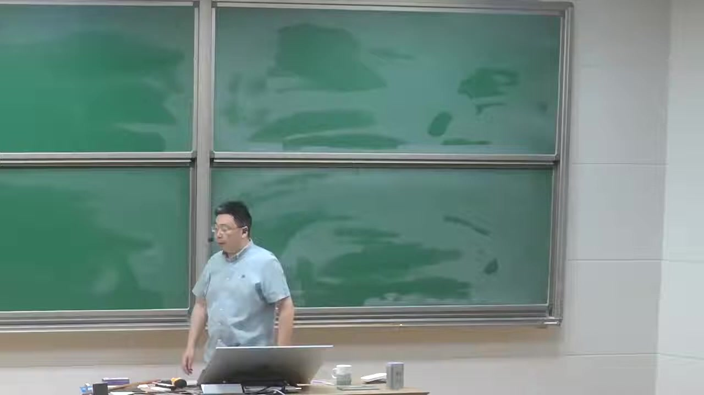


注解¶
这段视频主要介绍了量子电动力学（QED）中软光子辐射引起的红外发散问题，并通过电子在经典外场（如无穷重原子核的库仑场）中的弹性散射（卢瑟福散射）作为具体例子来探讨如何处理和消除这种发散。
1. 核心概念解释¶
- 软光子 (Soft Photon): 指能量极低、波长极长的光子。在散射过程中，带电粒子可能会辐射出这种光子。由于其波长远大于散射过程的特征尺度，软光子无法分辨粒子的内部结构，只能“感知”到粒子的总电荷。
- 红外发散 (Infrared Divergence): 在计算包含软光子辐射或交换虚软光子的费曼图时，由于光子质量为零，积分在低能（红外）区域会出现无穷大的结果。这是量子场论中常见的问题，必须通过物理上可观测的截面（考虑探测器的能量分辨率）来消除。
- 辐射修正 (Radiative Correction): 在量子场论中，除了树图（最低阶近似）外，还需要考虑包含圈图（交换虚粒子）和韧致辐射（发射实粒子）的高阶修正。这些修正统称为辐射修正。
- 弹性散射 (Elastic Scattering): 散射前后粒子的种类和内部状态不发生改变，且总动能守恒。视频中特指电子在无穷重原子核外场中的散射，此时原子核不发生反冲，仅提供一个静态电场。
- Eikonal 因子 (Eikonal Factor): 在软光子近似下，描述带电粒子发射或吸收软光子的普适因子。它仅依赖于粒子的电荷和运动方向（或速度），而不依赖于粒子的具体种类或能量。
2. 理论背景与公式解析¶
视频中提到了将卢瑟福散射等效为电子在经典电磁场中的散射。
- 经典电磁场近似: 对于无穷重的原子核，其反冲可以忽略，因此可以将其产生的电磁场视为一个静态的经典背景场 \(A_\mu^{cl}(x)\)。
- T 矩阵元: 在这种近似下，散射的 T 矩阵元可以写为： \(i\mathcal{M} \cdot (2\pi)\delta(E_f - E_i)\) 这里由于外场是静态的（不随时间变化），所以能量守恒（由 \(\delta(E_f - E_i)\) 保证），但空间平移对称性被破坏，因此三维动量不守恒。
- 不变振幅 \(\mathcal{M}_0\): 领头阶（Born 近似）的不变振幅为：
\(i\mathcal{M}_0 = -ie \bar{u}(p') \gamma^\mu u(p) \tilde{A}_\mu^{cl}(q)\)
- \(e\): 电子电荷。
- \(u(p), \bar{u}(p')\): 入射和出射电子的旋量波函数。
- \(\gamma^\mu\): 狄拉克矩阵。
- \(\tilde{A}_\mu^{cl}(q)\): 经典外场在动量空间的傅里叶变换，其中 \(q = p' - p\) 是动量转移。
- 卢瑟福散射的库仑势: 对于卢瑟福散射，经典外场仅有标量势（库仑势）非零： \(A_0^{cl}(\vec{x}) = \frac{Ze}{4\pi |\vec{x}|}\) 其动量空间形式为 \(\tilde{A}_0^{cl}(\vec{q}) \propto \frac{Ze}{|\vec{q}|^2}\)，而空间分量 \(\vec{A}^{cl} = 0\)。
3. 截图板书描述¶
提供的截图中，黑板上没有清晰可见的板书内容。讲师正在讲台前进行口头讲解。
段落 2：软光子实发射的eikonal因子与概率因子¶
时间： 00:06:47 ~ 00:12:33
📝 原始字幕
cross-section 微分解灭呢 你判断它的 DC 我叫DCM0 一个P 到P 电子发生弹性散射的这个微分解灭呢 就是我们的住民的 录策服的一个 就是一个相路论系的 录策服的一个 散射过程 录策服的一九一三年 一九一三年做 一九一一年左右 我忘记是 到了一一一年一三年 反正一九一十年 它是一个非常论的一个 R法例子 是吧去装这个金博 我们把它 现在变成一个相路性的电子 去打一个 屋充公园子和 这个住民的这个 叫依赖是吧 这是一样的 这是PESC的息题 4.4 好 那我们 一直作为出发点 我们考虑这样一个过程的 一个辅车修正 OK 那我们现在考虑呢 一个经典的一个 经典的一个电磁式 OK 我们考虑 这个出发的电子呢 能辅车一个软光子 我们关心红尔发散 如果它很硬的话 这个传播子 能发of shell 它是远远离敲 所以不会导致任何红尔发散 我们在iq上 因此的分谋有个 P.K分之一 是吧 这是为什么会 它有一个similarity 这会导致发散 如果这个光子很硬的时候 你论正它 这个传播子是远远离敲的 所以没有任何问题 好的 那我们考虑 墨台的电子呢 也可以释放这样一个软光子 OK 在下一阶呢 我考虑伏车之后 正呢 我只有两个分半图 那我们利用我们您学过的这个 iq当竞死 我们您知道怎么做了是吧 iq当proclamation 我可以写成 这个不变政府 我一般讲i 这是来自有的这个S算幅 是吧 这时候的坑门声 然后你发现 这是一个电子 出的电子的 动乱着屁 屁屁加上一个光子 这个光子的动乱是K OK 我可以 写成这种形式 iM-0那是刚才我写下了 这个录售伏散车的 这个Leading-out 的这个 这个Immers MQ 是吧 描着描在这样一个 iq当竞死的跟这个 spin stretch的没有关系 它总是可以factorize 总可以因此化成这种形式 iq当竞死也可以写这种形式 对于一个 出台墨台辅设论是 匹匹点Apple Insta Apple Insta 代表光子的计划十辆 匹匹点K 加上Apple 减去 这个腹号呢 是为个Sign 为个腹号的一个系数 是吧 对于录设的是一个腹号 p点Apple Insta p点K 加Apple sorry,这是解Apple 好,这是我们上两个学的知识 大家很容易去 去验证这一点 这是我的 iq当factor 我现在只考虑自己简单的形形 只考虑辅设一个软件 软光子是吧 原来让你可以将来把 我整成辅设这两个 辅设任意多个 任意多个数目的是软光子 那好的 那我们可以把它这个 剧中原模平方 向前积分是吧 原来这光子动量 我们考虑非常非常软是吧 你发现呢 你利用这个即便公式的时候呢 你考虑这样一个 1-2的一个过程的时候呢 你发现 你可以非常容易得到是 一个领头接的一个 class action 然后呢 成一个单个的光子的 一个相公尖 几分 这个单光子的相公尖 几分测读 它是轮子不变的 可以的摸 是吧 我们都非常熟悉 然后呢 对于光子的两个 极化物理计划求和 你发现 只需要对这个 iq当形子的摩批方式 可以是吧 然后呢 你是一方 pp点i-p-dm-k ok 这i-p-dm-k真的 因为这不是个圈头 这是个 树图的摸批方式 这i-p-dm-k 你们都不重要 我还要不要 咱们俩代表它的 holicity 咱们的 p-dm-k的平方 ok 这个单个光子的一个 相公电机分测读 ok 相公电机分测读 来 好 那非常有意思一点 是 你这部分因子 你可以 物理上全是什么呀 全是成这个 辐射 出一个软光子的 级绿 因为我们知道 结面 有一个级绿权式 是吧 辐射一个软光子的级绿 ok 我们管它东西呢 我们这部分因子呢 管它叫 叫 propability吧 所以叫 p-r-o-b propability级绿 好
课程截图：

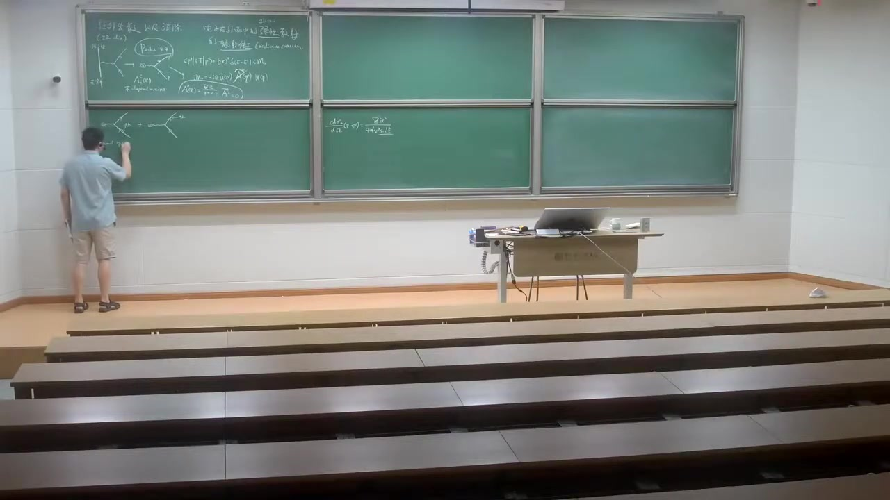
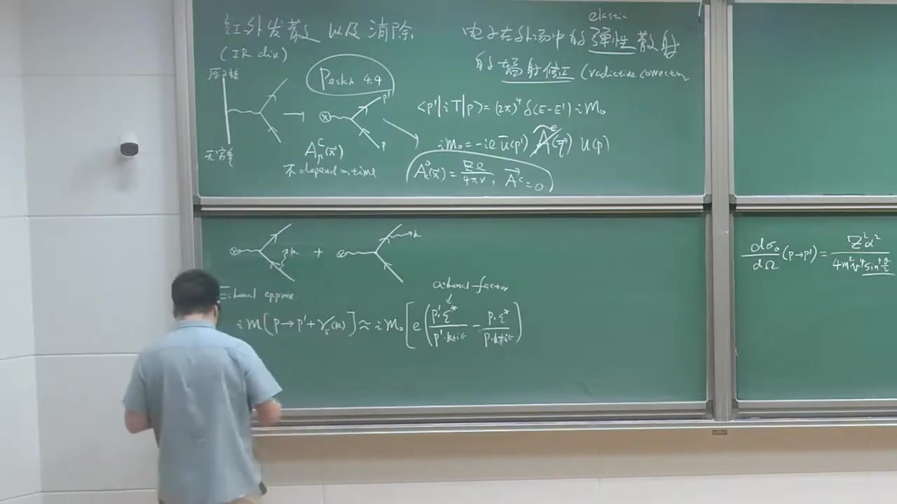
注解¶
这段视频继续探讨了电子在经典外场中散射时辐射软光子的过程，重点推导了软光子辐射的微分散射截面，并引入了“软光子近似”（Eikonal Approximation）的概念。
1. 核心概念解释¶
- 软光子近似 (Eikonal Approximation / Soft Photon Approximation): 当辐射的光子能量极低（软光子）时，光子的动量 \(k\) 远小于电子的动量 \(p\) 和 \(p'\)。在这种情况下，电子在辐射光子前后的动量变化可以忽略不计，即 \(p \pm k \approx p\)。这使得散射振幅可以分解为无辐射的弹性散射振幅与一个“软光子因子”的乘积。
- 因子化 (Factorization): 在软光子近似下，包含软光子辐射的复杂过程的振幅或截面，可以写成一个简单过程（如弹性散射）的振幅或截面，乘以一个只与软光子相关的因子的形式。这大大简化了计算。
2. 板书公式解析¶
视频中推导了辐射一个软光子时的不变振幅和微分散射截面。
1. 软光子辐射的不变振幅 (Eikonal Approximation)
- \(i\mathcal{M}\): 辐射一个软光子过程的总不变振幅。
- \(i\mathcal{M}_0\): 领头阶（无辐射）弹性散射（如卢瑟福散射）的不变振幅。
- \(e\): 电子电荷。
- \(p, p'\): 入射和出射电子的四维动量。
- \(k\): 辐射出的软光子的四维动量。
- \(\epsilon^*\): 辐射光子的极化矢量（复共轭）。
- 括号内的项: 称为 Eikonal Factor (软光子因子)。第一项来自出射电子辐射光子，第二项来自入射电子辐射光子（带有负号是因为动量守恒的方向）。分母中的 \(p' \cdot k\) 和 \(p \cdot k\) 来源于电子传播子，当 \(k \to 0\) 时，这些分母趋于零，导致了红外发散。
2. 包含软光子辐射的微分散射截面
- \(d\sigma\): 辐射一个软光子的微分散射截面。
- \(d\sigma_0\): 领头阶弹性散射的微分散射截面。
- \(\frac{d^3k}{(2\pi)^3 2E_k}\): 单个光子的洛伦兹不变相空间积分测度。
- \(\sum_{\lambda}\): 对光子的极化状态 \(\lambda\) 求和。
- 积分部分: 物理上可以解释为在弹性散射基础上，辐射一个软光子的概率 (Probability)。
3. 截图板书描述¶
截图中老师正在黑板上画费曼图。 * 左侧黑板: 标题为“红外发散 以及消除 (IR div)”。画了一个电子在经典外场（用带叉的圆圈表示）中散射的树图，并指出外场 \(A_\mu^c(x)\) 不依赖于时间。 * 中间黑板: 正在画包含辐射修正的费曼图。画出了出射电子辐射一个光子的图，旁边写着 \(+ \cdots\) 表示还有其他图（如入射电子辐射光子）。 * 右侧黑板: 写着卢瑟福散射的微分散射截面公式 \(\frac{d\sigma_0}{d\Omega} (p \to p') = \frac{Z^2 \alpha^2}{4 m^2 v^2 \sin^4 \frac{\theta}{2}}\)。
段落 3：极化求和、角积分定义与红外发散出现¶
时间： 00:12:33 ~ 00:20:30
📝 原始字幕
那我们来看一下 这个propability等于什么 我们分析一下 由于它这个 埃克党因子 我们上年科给大家 印象的软定了 你知道 它是因子呢 在整部层次满足这个 挖的等于试试吧 把app from start 或者这个光子动量的话 它显然等于零 这几年的电贺手衡 这很吹呗 出太一个 电子墨太一个 电贺显然手衡 所以 我们以前给大家 学过对于一个 辐射一个 光子的过程呢 我们有个计划球的公式 是吧 我向大家不要忘 以牛 这是lamb的 lamb的 对这个lamb的球盒 我可以做一个 有效的替换 不如说 这是等 不如说这样做替换 能得到正确答案 这个球盒 某种意义上 它包含了两个废物里的这个帮子 但是它们互相抵销了 是吧 这是一个非常重要的知识点 比如我们要介绍 compromising的吧 我们需要利用这样一个知识 OK 所以呢 这个东西你把它 就模拼方 利用这个标准的方法 去做一做的一 就是这样一个因子 第三K 二拍的三次方 二贝的K的 董亮的模 就是光子的能量 然后呢 它还成一方 付的这名牛 这是我的 计划球盒这个公式 是吧 然后它 给它服务了 把它从提出来 你很容易得到 要等于 pp mu 除以pp点K 简去p mu 除以p点K 再成一pp nu 除以pp点K 简去p nu 除以p点 OK 这是一个非常 标准的一个俱动员 一个不变成 模拼方的一个操作 用不用考虑 这个默态光子的这个计划 是右选还是左选 好 这名字呢 你把它称开以后呢 你可以发现它等于 一方 第三K 二拍的立方 二K 然后呢 你会发现 我把这个一方这个电贺 电贺我和常常出的 放在基本话外面去 然后这个成绩呢 你发现 最后有三项 二P点P 除以p点K 再成一pp点K 简去p方 除以p点K的 平方 再简去pp的平方 除以pp点K的平方 OK 这是我的经过了一些 简单的一些操作 好 那我们这个机分呢 是个 迪卡尔这个平面左标是吧 我们想把那块球左标的话 我们都知道怎么做 我们把第三K可以写成 一个标准的 一个DK 的模 这个JackO比是吧 这个K的模的平方 再成一个立体角 原来K的方那个立体角 这是非常非常非常地弱弄的 好 我把那块球左标 然后我发现了 这样一个 我们再重新 订一个单位式使量 KHM 它订阅的是KM 由除以K的动量的模 它显然等于什么呀 你可能会认为它等于1 零分分而1 30量呢 是K 除以K OK 你很容易验证 所以我想显示 把它抽出了它这样一个 抽出了它这样一个 看到这个DK的这个 模的这个机分的话 我可以把它 这样好 除了这个方法里面 完全都没有亮钢的 屁和屁点屁 屁点屁屁比掉了 然后你必须得 弥补一下 这样一个K的平方 它也非常三次方 是吧 好 那你稍微做点手脚的话 你放在这个音质 往上洗到这吧 你可以稍微改写一下 你可以把它写成 R法 除以Pie DK 这是一个 正数像 光子的一个动量 DK除以K 因为分为一个K的三次方 然后呢 我订一个 一个无亮钢的一个寒暑 它的是这个 出它力值的速度 和墨它电子的速度的一个寒暑 具体的定义呢 你可以反映它 具体的定义呢 是写了这 它等于一个 脚平均 对K的所有方向呢 左立体脚击分 除以四派 所以是个脚平均 然后 RP点 Pie DK 所有等于说 这个击分 我把这个静向和脚向的 给它分开了是吧 Pie DK 这每一项都是无亮钢 脚击分也无亮钢 所以整个这个 挨寒暑呢 也没有两钢 Pie方等于M方 因为它在敲 Pie DK Head Ping DK Head Ping OK 这是我们这个R还是个定义 OK 我们总之来说 这个V呢 是这样 我们定义这个4动量 Pie Pie 可以写成它的能量 1 V Pie Pie Pie Pie Pie Pie Pie Pie Pie Pie Pie Pie Pie Pie Pie Pie 所以关键的是 大家看这个进向机分 对于K的这个摩肌分呢 你发现 它其实是 无窮大 OK 这其实就是一个红外发散 这时候我们看到了红外发散 因为原子上没有理由不允许光子 扶着光子的波长 非常非常无重长 但是人家允许 KQ里那时候 这个基本显示对着发散 是吧 这是一个闹个的一个红外发散 闹个发散是个非常温柔的发散 它不是很恶劣 当然它也是无重的 是吧 那我们怎么来做呢 我们讲到这边 说不定回忆一下 这个拍子的时候 第六章我特别喜欢一个非常好的例子 它可以从半斤点的一个竞士 也能够重现这样的一个红外发散 它做了事情呢 大概是咱们给大家
课程截图：


注解¶
以下是对视频片段（00:12:33 ~ 00:20:30）的深度注解：
1. 核心概念与理论背景¶
本段视频主要探讨了量子电动力学（QED）中韧致辐射（Bremsstrahlung）过程的红外发散（Infrared Divergence）问题。
- 极化求和（Polarization Sum）： 在计算辐射光子的截面或概率时，通常需要对光子的极化状态进行求和。对于真实光子，极化矢量 \(\epsilon_\mu\) 满足横向性条件 \(k \cdot \epsilon = 0\)。在实际计算中，常使用替换 \(\sum_{\lambda} \epsilon_\mu^{(\lambda)*} \epsilon_\nu^{(\lambda)} \to -g_{\mu\nu}\)。虽然这引入了非物理的纵向和时间极化光子，但由于规范不变性（Ward恒等式），这些非物理自由度的贡献会相互抵消，从而简化计算。
- 红外发散： 当辐射出的光子能量 \(k^0 = |\vec{k}| \to 0\)（即波长趋于无穷大，所谓的“软光子”）时，辐射概率的积分会出现对数发散（\(\int \frac{dk}{k} \to \infty\)）。这被称为红外发散。
- 物理意义： 红外发散表明，在任何带电粒子的散射过程中，辐射出无穷多个能量极低的光子的概率是发散的。这实际上意味着纯粹的弹性散射（不伴随任何光子辐射）的概率严格为零。要获得有限的物理结果，必须将软光子辐射的截面与弹性散射的单圈虚修正（顶点修正）结合起来，两者中的红外发散会精确抵消（Bloch-Nordsieck定理）。
2. 公式解析¶
视频中推导了软光子辐射概率的积分表达式。
1. 极化求和与模平方展开
辐射概率包含以下因子的模平方（对极化求和）：
使用替换 \(\sum_{\lambda} \epsilon_\mu^{(\lambda)*} \epsilon_\nu^{(\lambda)} \to -g_{\mu\nu}\)，上式变为：
展开后得到三个项：
- \(p, p'\)：电子的初态和末态四维动量。
- \(k\)：辐射光子的四维动量。
- \(p^2 = p'^2 = m^2\)（电子在壳）。
2. 动量空间积分与红外发散的显现
将上述因子代入相空间积分 \(\int \frac{d^3k}{(2\pi)^3 2k^0}\) 中。将 \(d^3k\) 转换为球坐标 \(k^2 dk d\Omega\)，并定义单位四维矢量 \(\hat{k} = k/|\vec{k}| = (1, \hat{n})\)，其中 \(\hat{n}\) 是三维单位矢量。注意到 \(k^0 = |\vec{k}|\)，积分可以分离为径向和角向部分：
- \(\alpha = e^2 / (4\pi)\)：精细结构常数。
- \(\int \frac{dk}{k}\)：径向积分。当 \(k \to 0\) 时，这个积分呈现对数发散，这就是红外发散的数学来源。
- \(I(\mathbf{v}, \mathbf{v'})\)：角向积分定义的无量纲函数，依赖于电子的初末态速度。
3. 角向积分函数 \(I(\mathbf{v}, \mathbf{v'})\)
视频中定义了无量纲函数 \(I\)：
这里使用了 \(p^2 = p'^2 = m^2\)。四维动量可以写为 \(p = E(1, \mathbf{v})\)，其中 \(\mathbf{v}\) 是速度。
3. 板书截图描述¶
截图中展示了以下内容： * 标题： “红外发散 以及消除 (IR div)”。 * 费曼图： 左侧展示了弹性散射的树图和单圈顶点修正图；右侧展示了伴随光子辐射的树图（韧致辐射）。 * 公式： * 弹性散射振幅：\(\langle p' | iT | p \rangle = (2\pi)^4 \delta(E-E') i\mathcal{M}_0\) * \(i\mathcal{M}_0 = -ie \bar{u}(p') \tilde{A}_\mu^c(q) u(p)\) * 软光子辐射的概率公式（包含极化求和与相空间积分），即视频中详细推导的部分： \(d\sigma(p \to p' + \gamma) \approx d\sigma_0(p \to p') \int \frac{d^3k}{(2\pi)^3 2|\vec{k}|} \sum_{\lambda} e^2 \left| \frac{p' \cdot \epsilon^*}{p' \cdot k} - \frac{p \cdot \epsilon^*}{p \cdot k} \right|^2\)
段落 4：经典轫致辐射类比与红外灾难图像¶
时间： 00:20:30 ~ 00:26:18
📝 原始字幕
简单描述一下 它考虑一个经典的弄力 学了一个电池服设的一个问题 它考虑一个大电力子 它来运速超红的方向运动 然后它突然平成方向 是吧 是它要运动 你发现呢 这是一个大电流 是吧 然后你发现它会 因为我们知道 修电动学我们知道加速的力子 大电力子它会辐射 会点着辐射 你发现 如果速度很高的时候 它会沿着这个方向 它会辐射 这个辐射呢 就叫 运制服设 我们都知道的东西 是吧 这在经典的弄力学里面的这种概念 这是德文词 德文词比较长 比如说是德文词 是不软兴 大概意思就是说 breaking 就叫 脑车的服设 突然改成瞎了一下 急下来车だ 突然在瞎了车 然后在管方向 这个PASS的数面都没有得太给你 据起来说呢 如果在 龙子挥范下的话 我知道这样一个Mex方程呢 我们的Mex方程可以写的这种形式 这也没有试吧 我们如果去龙子挥范的话呢 这方程非常简单 把这项人调 然后呢 进点点东西学里面老师告诉你的 你可以通过所有的推迟式 这个我以前订阅过 DRRWTARDIT 你可以 给订阅一个Count 给订阅一个 代表例子的一个Count 你可以解除了 在 给订外时刻 然后它需要花时间到 XX0大一把0 在X0时刻在任何一个位置 它的这个电子厂 ok 所以有一些原因 我觉得 我们就 不给它过一遍 然后就说了思路啊 就是它PASS的那个例子 DRRWTARDIT 它有这个JAX 那边非常著名的一个 进点点东西学里面 教材大家都知道 好 然后它 利用标准的一个 进点点东西的公式 就辅射能量 辅射的电子厂能量 辅射能量 通过电子厂的形式 厂伯的 我们知道它订阅什么 我们都学过 21% 电厂厂的平方 家资料这么平方 ok 因为我通过解卖X方程 你的用推迟式 隔灵韩售的方法 你知道 AMU ok 其中有进展的库轮部分 我们不关系 关系的辅射部分 ok REDITION PART 你解一下的话 我要列过很多步驟 你发现呢 非常有意思的是 这个能铺的 你发现它长得这样子 R法出一派 去用R法再给大家 回立一下 一方出于四派 ok R法出一派 经济结构成熟 然后呢 你发现机分的是DK i 微微 这个i韩售呢 这个叫 韩售的exactly 就是刚才 我刚刚引到这样一个 一个 一个韩售 在哪儿呢 我看一下 在这儿 它完全一样的 大家看这公式 我刚刚说 辅射一个非常软的 光子当个光子这个 极率的是R法出一派 DK出一派 这个通过纪念能量的计算呢 跟着非常像 我辅射能量呢 这没有分吗 还没有K ok 所以我现在 用点A因子 的光量的假设 我们A因子才假设呢 光量子呢 是能量是一份一份的 是吧 没有光子能量呢 没有光子能量呢 等于H8 Oh my god 我们在单位之后 等于H8K吧 一样的 我 我 我另有的C等1 光数等1是吧 所有的考虑呢 就说 如果辅射的光子数呢 我通过这样 所谓的一个 今年 更多率 加一点量的力学 加一点光量的假设 辅射的光子的个数 的数目吧 选择的呢 它能土 这个还要 这个背机还要是 能土是吧 Andy Spectrum 在 在这段区间里面的能量 处于 这个每个光子能量 就是它的 能不 它的数量是吧 处于H8 ok 这个 这个 H8K对到 这样的话就 跟我刚才得到这个 辅射单光子 这样一个 几率呢 在量的电动力学里面的计算呢 是吧 完全行上 完全一样的 这是今年的能力学 ok 这个选呢 是对发散的 是吧 对手发散 这是红二发散 所以今年的能力学 结合 光量能量想象告诉你 ok 辅射出 非常低的 低能量的光子 的数目 是无重大 ok 这个问题 可以叫一个红外 灾难 ok 这是早期 早期人们 恨到又制出来 这是从那问题的 ok 好 所以这是非常漂亮的 这个经典和量子的 经典的能力学会 量子长了一个对应 你看看 长得非常非常像 这个例子 我们现在起发性 好 那我们现在
课程截图：

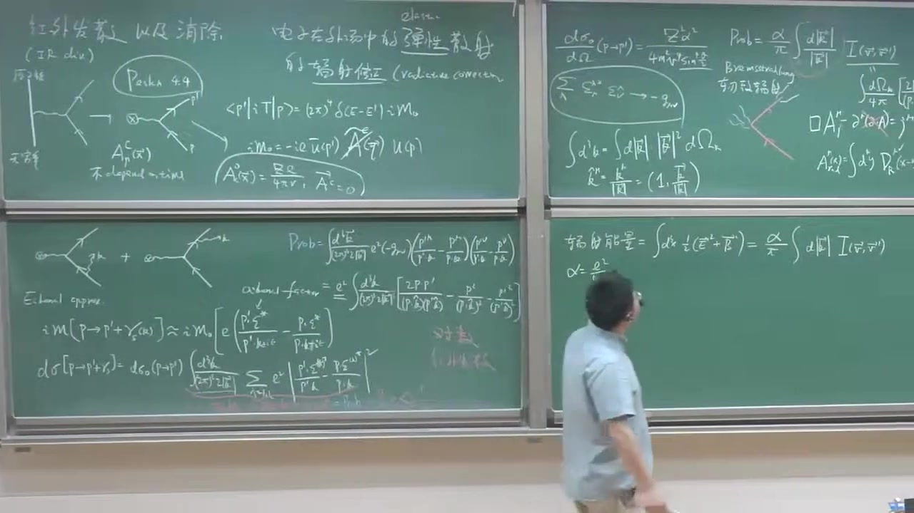

注解¶
以下是对视频片段（00:20:30 ~ 00:26:18）的深度注解：
1. 核心概念与理论背景¶
本段视频主要通过经典电动力学的视角，重新审视了带电粒子加速（或减速）时的辐射问题，并将其与前面推导的量子电动力学（QED）中的软光子辐射结果进行了对比，揭示了经典理论与量子理论在低能辐射（红外发散）问题上的深刻联系。
- 韧致辐射 (Bremsstrahlung): 视频中提到的“德文词”，意为“刹车辐射”（braking radiation）。在经典电动力学中，当一个带电粒子（如电子）在运动过程中突然改变速度（加速、减速或改变方向，例如在原子核的库仑场中偏转）时，它会辐射出电磁波。
- 推迟势 (Retarded Potentials): 在经典电动力学中，求解非齐次麦克斯韦方程组（在洛伦兹规范下）时，电磁势（标量势 \(\phi\) 和矢量势 \(\mathbf{A}\)，或四维势 \(A^\mu\)）的解可以通过推迟格林函数得到。这意味着空间中某一点在时刻 \(t\) 的电磁场，是由源（电荷和电流分布）在较早的时刻 \(t'\) 产生的，时间差 \(t - t'\) 恰好是电磁波以光速传播这段距离所需的时间。
- 经典辐射能量谱: 经典电动力学可以计算出加速电荷辐射的总能量以及能量随频率（或波数 \(k\)）的分布（能谱）。
- 光量子假说与经典-量子对应: 视频中展示了一个非常巧妙的物理图像：将经典电动力学计算出的辐射能量谱，除以单个光子的能量 \(\hbar \omega\)（或 \(\hbar k c\)，在自然单位制下 \(c=1\)），就可以得到辐射出的光子数目的分布。这个通过“半经典”方法得到的光子数分布，与完全使用量子电动力学（QED）计算出的软光子辐射概率在形式上是完全一致的。
- 红外灾难 (Infrared Catastrophe): 无论是经典理论结合光量子假说，还是纯粹的QED计算，都表明在辐射极低能量（软）光子时，辐射的光子数目会趋于无穷大（因为积分 \(\int \frac{dk}{k}\) 在 \(k \to 0\) 时对数发散）。这在历史上被称为“红外灾难”。
2. 公式解析与板书说明¶
虽然这段视频的截图中老师正在擦黑板准备写新内容，但根据讲解，我们可以还原其核心逻辑：
1. 经典电动力学中的麦克斯韦方程与推迟解：
在洛伦兹规范（Lorentz gauge, \(\partial_\mu A^\mu = 0\)）下，麦克斯韦方程可以写为波动方程的形式：
其中 \(\square = \partial_\nu \partial^\nu\) 是达朗贝尔算符， \(j^\mu\) 是四维电流密度。
利用推迟格林函数 \(D_R(x-y)\)，可以得到其解（推迟势）：
这表示场 \(A^\mu\) 是由源 \(j^\mu\) 产生的。
2. 经典辐射能量与能谱：
经典电动力学中，辐射的能量可以通过计算电磁场能量密度（与 \(\mathbf{E}^2 + \mathbf{B}^2\) 有关）的积分得到。对于一个突然改变速度的粒子，其辐射能量谱（单位频率或波数区间的辐射能量）在低频极限下具有如下形式：
（这里的括号内对应于前面QED推导中的因子 \(I(\mathbf{v}, \mathbf{v}')\)）
3. 经典与量子的对应（核心推导）：
视频中指出的关键一步是，将经典的辐射能量谱 \(dE\) 转化为辐射的光子数 \(dN\)。根据爱因斯坦的光量子假说，频率为 \(\omega\)（波数为 \(k\)，\(\omega = k\) 在自然单位制下）的光子能量为 \(\hbar k\)。
因此，辐射的光子数分布为：
将经典能谱代入，会发现：
这个结果与之前QED计算得到的单光子辐射概率 \(Prob\) 的公式：
完全一致（忽略常数因子的差异，物理本质相同）。
3. 通俗解释¶
想象一辆高速行驶的汽车（代表电子）突然急刹车并转弯。在经典物理学中，这种剧烈的运动状态改变会产生“刺耳的刹车声”（代表电磁辐射，即韧致辐射）。
经典电动力学可以精确计算出这个“刹车声”的总能量以及不同音调（频率）的能量分布。
现在，我们引入一点量子力学的概念：声音是由一个个“声子”（这里对应光子）组成的。如果我们想知道到底发出了多少个某种音调的“声子”，我们只需要把那个音调的总能量除以单个“声子”的能量。
视频中老师告诉我们，当我们用这种“经典能量除以量子能量”的半经典方法去计算低能（低音调）光子的数量时，得到的结果与我们用极其复杂的量子场论（QED）算出来的结果一模一样！
更令人惊讶（也令人头疼）的是，无论是哪种方法，计算结果都表明：这辆车在刹车时，会辐射出无数多个能量极低（极软）的光子。 这就是所谓的“红外灾难”。因为能量极低，所以单个光子能量接近0，总能量除以接近0的数，光子数量就爆炸了。这说明我们不能简单地孤立看待“辐射零个光子”和“辐射一个软光子”的过程，必须将它们结合起来才能得到物理上合理的结果。
段落 5：红外正规化与探测器能量阈值¶
时间： 00:26:18 ~ 00:34:50
📝 原始字幕
回过头来 我们现在在讨论这个机分 这个机分 数上有定义的话 我们必须让它变成有限 因为我们不能讨论无限的值 所以我们考虑这个 一个Lambda 是个正的一个数 让机分个下线 Lambda大约0 这种手区 叫做水的这个 红外正规化方案 来个轮 这个轮子 会正规化 正规化 所以意思是 把一个数学上 发散无穷的东西 不能有限 ok 或者R 来个Liter 我们可以采用很多方式 其中 Pascad的数 它要选择 是给光子 加了一个小指量 这样的话 在光子 可以禁止的时候 它能量机分 就是从这个小指量 纽开始 或者叫 i'm gamma开始 这个机分呢 它的低能端 那些被咖套复了 它就没有 它就没有发现了 我们以前学Pronger理论的时候 我们知道这个Pronger理论 我们没学到StupidTricks 是吧 一个�C5的一个Pronger理论的话 只让群零的级厌来说 它如果我和一个手红流的话 这个群零的级厌 没有任何问题 它有个重长级化的量 一个粒子 只有肚底咖啡了 是吧 QD呢 它觉得我和一个手红流 所以加了小指量呢 你没有打来很多问题 总人来说呢 它可以 咖套复长一个 红还发散 我们呢 选择是用更加简单的方法 我们光子还凝几量 我们只是粗暴 简单粗暴 就说 再这样一个 相亏连机分呢 这个下线呢 用蓝门来代替 OK OK 我们尝个方案这个 当然这不 去蓝门的 OK 干这只是非常认为的 隐级那个东西 我们都知道 物理可观量的不可能 依赖于任何 认为隐级的一个 正维化的一个 正维化似 不管是光子指量 还是蓝门的 用不着光子没有指量 而机分呢 也没有理由 蓝的开始 这是数据上 为了往下接着做 是吧 好 那我们现在看下 机分下线 等我选蓝的 那机分上线呢 我原来上来说呢 我只是用软进式 Icon进式 我要使我进式 有效的话 我不能上线太高是吧 现在的这个 必须要涉及到真正的实验 你想真正的实验怎么做呢 真正的实验去 探测光子的需要所谓的那种 这个光子疼在气 或是电磁量能气 这为任何一个实验呢 仪器都不是完美的 所以它的零敏度呢 是有限的 所以任何一个真实的 一个世界的一个 光子量能气 物理上呢 光子的 探在气呢 零敏度是有限的 或者是它存在一个 探测的一个能量预知 这什么意思啊 或者它能量分辨率 我管它叫1T ok 就说 就如果这个光子能量特别低 要这个光子的能量和动量小于 这个1T的话呢 它其实不能够记录的 不能记录这样的软光子 不能探测 动量小于1T的软光子 所以说什么意思呢 就说考虑我们这样一个辅车修正 我发生了一个这个光子 动量K如果小于有了1T的话 实验让记录 说我还是个弹性散热过程 还是电子到电子 我现在不会告诉你 就是电子到电子的光子 就是这样的光子呢 非常波长非常长的光子 不会被实验的 它能在气所记录是吧 所以这个1T 任何一个高能物理实验装置呢 做一个加速器的机器指标 它都告诉你1T多少 比如说我记得 如果高能锁 我们的北京普遗 如果没记错的话 它是高能的机器 所以一个预值的能量 预值差不多是220个兆点的辅特 换成了说 在高能锁的机器 如果一个光子能量 如果小于2TM1微 那这样光子 是不会被实验 一起锁记录的 OK 所以来说 我们要只考虑软光子 我们只考虑弹性散热 那所以一个非常自然的一个 几分的上线呢 我们把它去成一个 一个1T 我的这个 我的这个能量的 谈则性的能量预值 好吧 那现在就简单了 那现在我们可以 再寫一步 我们考虑一个我们的弹性散热 如果实际上弹性散热 是P到P 加一个光子 这光子能量呢 我动量呢 小于这个能量预值 它能量预值 它现在可以写成 而法处于派 这个进向级分呢 是从Lambda到1T 现在我们都非常熟悉的 DK 处于K 光子的这个 动量 成义这个 脚含书 无量刚的脚含书 在乘有的 Lidding on the bone 熬得得上一个微分节面 OK 所以呢 这个简单这个级分呢 非常容易完成 这不是别的 它是什么呀 它是我的一个Lambda 含书 是吧 Lambda 1T 处于Lambda OK 所以它对处于Lambda 人们已经在一个 红外正红发子 这个简单我们也不是 红满意 是吧 但这个1T 是真实的物理 是吧 因为真实的这个 实验手 是有相关的 但我们 对这个工程我们不满意 是吧 对于一个 电子到电子 这样实验是 不能探测这个光子 所以还是谈一谈一谈 实验 微分节面 我们如果Lidding家预言 发现它是个对手发散 Lambda 迟越来越小 它穿 对手发散特别慢 它中规也是发散 是吧 所以说这是个Lidding家的困难 是吧 我们怎么办 实验家 物理测量 不能依赖于 物理 预言 一个正确的 好的物理语言 是能被实验严正的 是吧 物理语言 显然 不依赖于人们引进的 这样一个小Lambda 不依赖于 这所谓Lambda 就是说不得红二发散 是吧 那怎么办 我们这个预言 敏感于一个人们引进的参数 我们不高兴 是吧 现在有趣的物理 就要 好吗 好问一下 好 我们现在做的预言 你看一下这个微分节面 我们考虑的符合修正 是领头界的符合修正 它是这么与R法的一次方 所以我们要问一个问题 所有的澳大阿富的符合修正 我们考虑去全了吗 答案是No 我们还忽略了一类 这叫石修正 因为发射了一个时光字 我们还有一类 叫 窝厨 可在乘叫虚修正 没有考虑 它也是澳大阿富的 OK 是这 虚修正 这些数以十修正
课程截图：
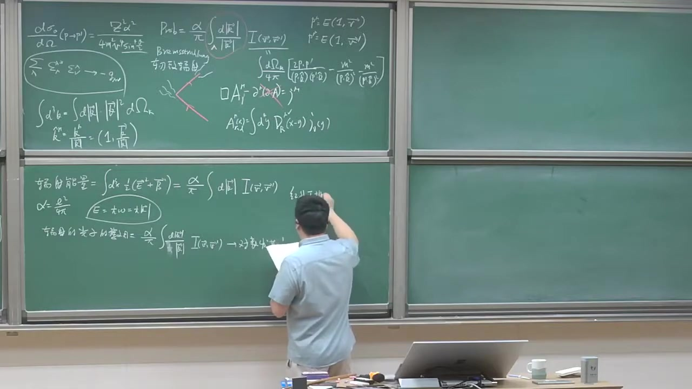
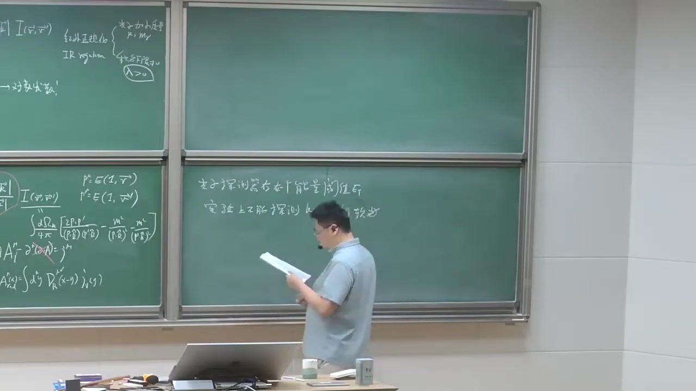

注解¶
以下是对视频片段（00:26:18 ~ 00:34:50）的深度注解：
1. 核心概念与理论背景¶
本段视频深入探讨了如何处理软光子辐射带来的红外发散（Infrared Divergence）问题，并将其与真实的物理实验测量联系起来，最后引出了解决该问题的关键——虚修正（Virtual Corrections）。
-
红外正规化 (Infrared Regularization): 由于软光子辐射的概率积分在光子动量 \(|\vec{k}| \to 0\) 时发散，数学上无法直接处理无限大的值。为了使计算能够进行，必须引入一个正规化方案。视频中提到了两种常见方法：
- 赋予光子一个极小的质量 \(\mu\) (Proca理论)：假设光子不是严格无质量的，积分下限从这个小质量开始。
- 硬截断 (Hard Cutoff)：简单粗暴地在动量积分的下限引入一个极小的正数 \(\lambda\)（Lambda），即要求 \(|\vec{k}| > \lambda\)。 这两种方法都是人为引入的数学技巧，最终的物理可观测物理量不应该依赖于这个人为参数 \(\lambda\)。
-
探测器能量阈值 / 能量分辨率 (\(E_T\)): 在确定了积分下限 \(\lambda\) 后，积分的上限如何确定？视频指出，这取决于真实的物理实验。任何真实的粒子探测器都不是完美的，存在一个能量阈值或分辨率 \(E_T\)。如果辐射出的软光子能量小于 \(E_T\)，探测器将无法记录到这个光子。在实验看来，这种伴随极软光子发射的散射过程，与纯粹的弹性散射（无光子发射）是无法区分的。因此，对于“实验上观测到的弹性散射”，其实际上包含了发射能量小于 \(E_T\) 的软光子过程，积分上限自然取为 \(E_T\)。
-
实修正 (Real Corrections) 与 虚修正 (Virtual Corrections): 发射真实存在的软光子被称为实修正。然而，计算发现实修正的结果是对数发散的（依赖于人为参数 \(\lambda\)）。为了得到一个不依赖于 \(\lambda\) 的、有物理意义的有限结果，必须考虑同阶（\(\mathcal{O}(\alpha)\)）的虚修正（即包含闭合光子环的费曼图，如顶点修正和电子自能修正）。物理上，实修正的红外发散将与虚修正的红外发散精确抵消（Bloch-Nordsieck 定理），从而得到有限的、可与实验对比的截面。
2. 公式解析¶
结合视频讲解，软光子辐射对散射截面的修正（实修正部分）可以写为如下积分形式：
- \(d\sigma_0\): 领头阶（Leading Order）的弹性散射微分截面（即不包含任何辐射的截面）。
- \(\lambda\): 红外正规化引入的积分下限（极小的动量截断）。
- \(E_T\): 探测器的能量阈值，作为积分上限。
- \(\frac{d|\vec{k}|}{|\vec{k}|}\): 软光子动量积分的核心部分。
- \(I(\vec{v}, \vec{v}')\): 依赖于电子初末速度的无量纲角积分因子（在上一段视频中已定义）。
积分结果与对数发散： 对上述公式进行积分，非常容易得到：
当人为截断 \(\lambda \to 0\) 时，\(\ln(E_T/\lambda) \to \infty\)。这就是所谓的对数发散（Logarithmic Divergence）。视频强调，一个正确的物理预言不能依赖于人为引入的 \(\lambda\)，这暗示了我们目前的计算是不完整的，必须引入“虚修正”来消除这个发散。
3. 截图板书描述¶
截图中，老师正在黑板左下角书写关于辐射能量和辐射光子数的积分公式。 * 黑板左下角写有：\(\int d^3k \dots = \frac{\alpha}{\pi} \int \frac{d|\vec{k}|}{|\vec{k}|} I(\vec{v}, \vec{v}')\)。这正是视频中讨论的导致对数发散的核心积分结构。老师通过板书向学生展示，如果不加限制，对 \(\frac{1}{|\vec{k}|}\) 的积分在低能端是发散的，从而引出了后续关于积分上下限（\(\lambda\) 和 \(E_T\)）的物理讨论。
段落 6：转向虚修正：LSZ展开与Z2准备¶
时间： 00:34:50 ~ 00:41:51
📝 原始字幕
或虚修正 它也是澳大阿富的符合修正 好 现在呢 我们要回一下 我们这样s的UHR公式 怎么告诉我们的 现在我们要用了 UHR公式 它要算这样一个 电子到电子的一个彈音散射呢 你可以考虑一下 更好Z2 电子的乘书的话因此 平方 乘义什么呀 乘义 这手的 因为这是经典场 所以它没必要 给它在安排一个不安不成的话因此 只有这两个电子 更好Z2的平方 然后能发现呢 在下一间呢 因为我要是它解腿是吧 所以不考虑把腿修正 但是你可以画出一个图 这个图出它墨它电子 可以交换一个虚光字 OK 然后加点点点 OK 这是LC定理 这是我们新鲜出路 我们先重要用一次 OK 然后呢 更好Z2的平方 显然是等于Z2 OK Z2呢 我可以把它重新写一下 现成1加得塔Z2 如果不要论是用的话 我们家得塔Z2呢 是不要论可以计算的 是吧 好 我要展开这个图呢 我可以重新画一下 是成这样子 还是领头接 一层一层的领头接 不用偶图 然后得塔Z2 再呈一 领头接的 这样一个分曼图 再加上 随的 这个图弄过来 叫Watex Collection 叫丁脚修正 OK 因为它是丁脚做了一个量子 辅车修正 这个还是一个1到1的过程 是吧 出态一个例子 梦的还一个例子 光子只剩在这个 传播子 主要是Watex Date 是用虚态 OK 我们省略到一个 更高階的修正 好 这个呢 在很多角落处里面呢 人们把这个 德塔Z2 人们经常要画成这种形式 请大家不要混贾 就说 这部分人们经常画成 形式上为了好记忆 以它画成外图上的一个 子能修正 这 这其实为了很小 因为我们都说了 我们可对S2M可对于 解腿的这种效应 是吧 但是呢 它为了变于记忆 它画上这种形式 它对于这种画法 这每个外腿呢 这更好Z2 剪1所以是二分之一 德塔Z2 把德塔Z2分成两半 一半每个人现在 二分之一 德塔Z2 是吧 然后呢 再加上 因为顶脚修正已经是澳大法结了 所以这个Z2 变成一九可以了 是吧 德塔Z2我们知道 从电子智能来的是吧 电子智能显示两个顶脚 所以显示澳大法的 你属下 这个是澳大法 这是澳大法 所以呢 我们 这已经澳大法了 所以我把Z2 德塔Z2不用考虑这一项 OK 所以唯有论计算 就一定要刷二分之一 这个接次 我要考虑同一阶 所有东西都考虑一全 是吧 好 我们请个名字 这个我们也知道 这个东西我们叫 IM0 好吧 像这一项呢 我请名字叫 IM1 一代表是 二分之一 是吧 我加个上边的德塔Z 代表它的贡献 是来自于 外腿的这个 不然是让我发因此的修正 这个呢 鼎脚修正呢 我可能叫 IM1 代表是 二分之一 放修正 加个上边的VWTX 可不可以吃 我分享图变云 被人考虑清楚 是吧 好 这个 严格的计算这些图啊 计算来说 是非常挑战的 这个 这个自能图和这个鼎脚修正 派斯坦说 第六张T7张 花了很多精力去做议计算 OK 这些图论发现 既有紫外发散又有 红外发散 所以说 计算还是非常挑战 我们现在呢 还不具备这种 能力去做这种计算 因为你还要去证文化 所谓这种紫外发散 但是呢 我们现在的目的主要是来 验证 它的红外发生的行为 OK 我们这样抽取它的红外发生的部分 我们完全不care它的紫外发散 所以说呢 我们现在呢 就是说做一个比较 讲话的一个技巧 OK 我们考虑圈积分的时候呢 做圈积分的时候呢 我们只考虑一软光机械 圈积分呢 是它要卡我所有的动量区域 当我们只关注了 当K很soft的时候 OK 圈积分时 我们只关注 因为红外发散来对 圈积分里面的K 非常软的时候 只关注这个 K距离那时候的 soft limit 好 所以既是圈动量呢 这个光子是握处的 但是它每个分量都很小的时候 我依然可以做所谓的iCloud竞刺 OK 这样呢会极大的 这个手的计算见变 OK 原来让你依然可以得到一种因子化的形式 这样一个握处的cratch 呢 红红1呢 正比波恩奥德iM0成一对 soft factor OK 所以因为iCloud因子跟字权没有关系 所以我们期待让这样的结论 不是特别复杂 好 那我们现在的一个任务呢 就算得到Z2 OK 好的 因为我们已经知道 Z2的N1 的到处 等于1件第4个码2 这是我第一节可以开始给大家讲的 是吧 这是我得到这个电子的长长重重化因子 我把Z2的N1可以写成1加德塔Z2 分之1 是吧 然后呢 因为德塔Z2 是个不要展开的技术的话 你可以约等于1件德塔Z2 加更高階的这样一个展开 然后我现在只要考虑到 这个澳大二法阶的话 我不要两边的话 你立即可以得到呢 德塔Z2等于 弯皮亚的电子自能 对PClash球导述 PClash等于电子的无力之量 好 我们这是要用这个公式 我们要去计算加一个Z2
课程截图：
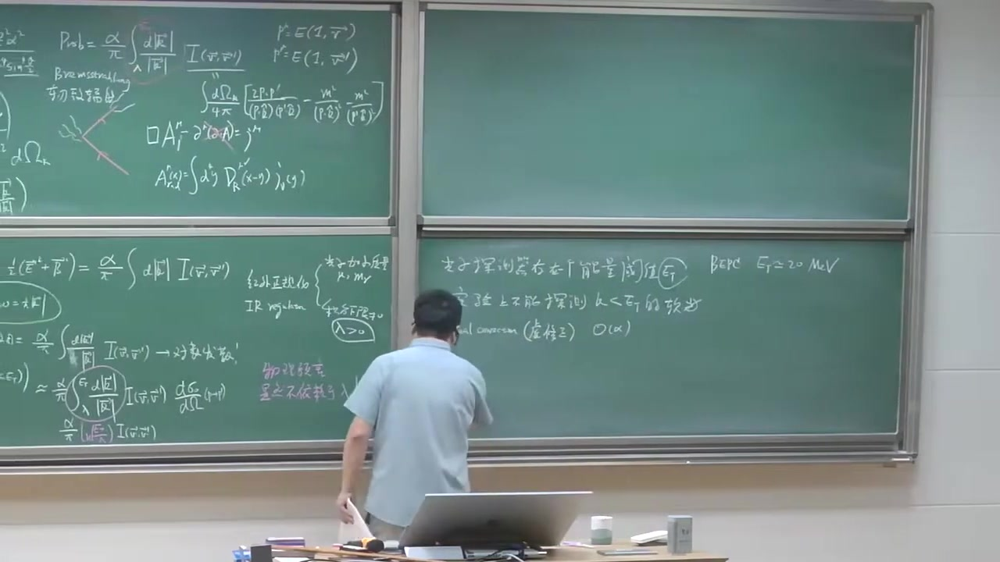
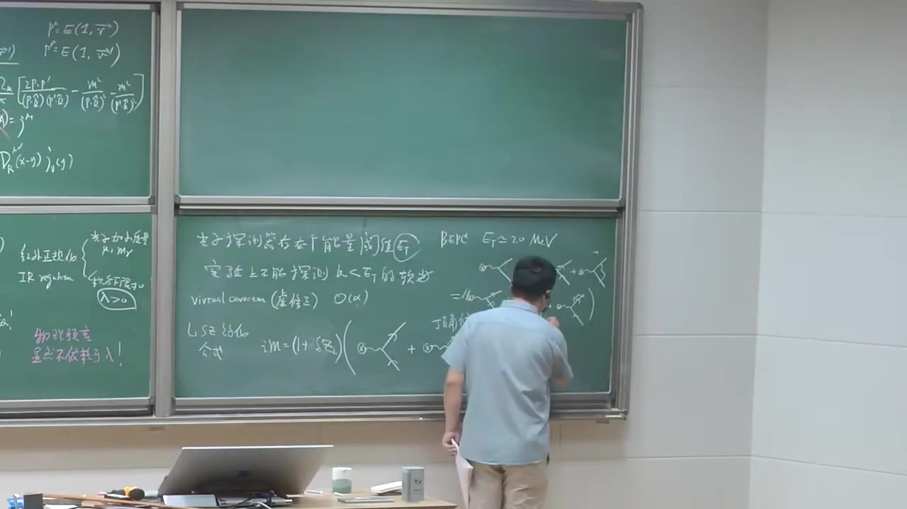

注解¶
以下是对视频片段（00:34:50 ~ 00:41:51）的深度注解：
1. 核心概念与理论背景¶
本段视频正式引入了虚修正（Virtual Corrections）的具体计算框架，探讨了如何利用微扰论处理单圈图（One-loop diagrams）中的红外发散问题。
- LSZ 约化公式 (LSZ Reduction Formula)： 字幕中的“UHR公式”实为 LSZ 约化公式。它将 S 矩阵元（即散射振幅）与相互作用场的格林函数联系起来。对于外线为电子的过程，每个外腿都会引入一个场强重整化因子 \(\sqrt{Z_2}\)。
- 场强重整化因子 \(Z_2\)： 描述了相互作用真空中的“裸”粒子与物理粒子之间的重叠程度。在微扰论中，可以展开为 \(Z_2 = 1 + \delta Z_2\)，其中 \(\delta Z_2\) 是 \(\mathcal{O}(\alpha)\) 阶的修正。
- 顶点修正 (Vertex Correction) 与 自能修正 (Self-Energy)：
- 顶点修正（字幕误识别为“丁脚修正”）：光子在相互作用顶点处发射并重新被吸收的过程。
- 自能修正：电子在传播过程中发射一个虚光子并再次吸收的过程。为了方便记忆和计算，通常将外腿的自能修正等效地分配给每个外腿，即每个外腿贡献 \(\frac{1}{2}\delta Z_2\)。
- 软极限/程函近似 (Soft Limit / Eikonal Approximation)： 严格计算圈积分（Loop Integral）非常困难，因为同时存在紫外发散和红外发散。为了提取红外发散行为，物理学家采用了一种技巧：只关注圈动量 \(k\) 非常小（软光子）的区域。在这种极限下，复杂的计算可以极大简化，并表现出因子化 (Factorization) 的特征。
2. 公式解析与板书重构¶
视频中口述和推导了以下关键公式（已修正字幕识别错误）：
1. 散射振幅的微扰展开：
- \(i\mathcal{M}_0\)：领头阶（Born level，树图阶）的散射振幅。
- \(i\mathcal{M}_1\)：\(\mathcal{O}(\alpha)\) 阶的单圈修正振幅，包含两部分：
- \(i\mathcal{M}_1^{\delta Z}\)：来自外腿场强重整化的修正，正比于 \(\frac{1}{2}\delta Z_2 \times i\mathcal{M}_0\)。
- \(i\mathcal{M}_1^{\text{Vertex}}\)：来自顶点修正的贡献。
2. 场强重整化常数 \(\delta Z_2\) 的计算公式：
- \(\Sigma(p)\)：电子的 1PI（单粒子不可约，字幕误识别为“弯皮亚”）自能函数。
- \(\not{p}\) (p slash)：狄拉克矩阵与动量四矢量的缩并，即 \(\gamma^\mu p_\mu\)。
- \(m\)：电子的物理质量。
- 物理意义： 这个公式表明，场强重整化因子的修正项 \(\delta Z_2\) 可以通过对电子自能函数在物理质量壳（On-shell，即 \(\not{p}=m\)）处求导来获得。
3. 通俗语言解释¶
想象两个电子发生碰撞（散射）。在最简单的图像（领头阶）中，它们只是交换了一个光子。 但量子力学告诉我们，过程远比这复杂。电子在碰撞前后，可能会“偷偷”发射一个光子然后自己又吸收掉（自能修正），或者在交换光子的瞬间，额外抛接一个光子（顶点修正）。这些就是虚修正。
计算这些“偷偷摸摸”的过程非常困难，因为积分会跑到无穷大（发散）。为了研究我们关心的“红外发散”（能量极低的光子惹的祸），老师采用了一个聪明的偷懒方法：只看那些能量极小的虚光子（Soft limit）。在这个极限下，复杂的算式会变得非常简单，原本纠缠在一起的项会变成“简单相乘”的形式（因子化），从而让我们能够轻松提取出红外发散的部分，为后续抵消真实软光子辐射的发散做准备。
段落 7：电子自能的软区域提取与红外部分¶
时间： 00:41:51 ~ 00:49:41
📝 原始字幕
好 那我们来给大家比划一下 这是我们真正算的 计算的一个 第一个弯路不待管 这个弯路是P 这个光子的东西是K 传播子电子传播子 端路是P件K 好我们知道它等于 付的iC 弯R PClash 好吧 按照飞板规则 第4K 除了二拍的40分 然后付的iE 干嘛 mu 你的飞铭子线多 这个顶角叫 mu 这个弯路这边是 mu 然后呢 飞铭传播子 iP Slash 剪K Slash 剪弯路叫iP 那算全做的时候 就飞板传播子的iP 很重要 OK 付的iE 干嘛 mu 这是另外一个 QD 顶角 然后成议一个光子传播子 我们都知道是飞板传播子 是iF 的计算 除了K方 小iP 这是电子智能 好的 然后我们改写一下 把它一些i很多的音质 整理整理 等于付的iE 1方 第4K 二拍的40分 有干嘛 mu PClash 剪K Slash 加iM 分母是P剪K的平方 加iM 干嘛 mu 1出于K方加iP 好 那从这个表达式 我想利用这个公式 我想直接出去得到Z2 得到Z2 等于对它对PClash 球岛 说全岸岛说 以后把PClash 变成物理电能质量 等于付的iE 平方 我们怎么球岛说的 我们球个桥 我们对于 中间这个传播者球岛说 我们出于简单 我们利用P丘岛 等于P剪K 所以对这个 PClash 球岛说 你可以让鞋 等于对DP丘岛球岛 是Lash球岛说 然后阻伦法则 在DPClash P丘岛是Lash 对DPClash OK 它想让你1是吧 所以呢你先 就是P丘岛 这也P丘岛 所以你发现 现在分子上球于 一下岛数 你会得到 P剪K的平方 DM方加iP OK 对第二项的分母球岛数 第一项鞋的平方 前人可以用这公式 对PClash球岛数 它可以等于 对DP丘岛平方球岛数 然后锁连法则 DPClash DPClash DPClash DPClash 其中大家看一下 这个PClash 平方 等于PClash DPClash 所以它对它平方这项 等于 两倍的 PClash OK 好 我们先把鞋线和PClash P剪K的平方 加iP 加iP 弄的平方 对它分母球岛数 对PClash 平方球岛数 它有个合外平方 然后利用这两公式 OK 你会发现 你有得到 保留分子PClash 剪KPClash 加iP OK 你有个 这项 所以两倍的 PClash 剪KPClash OK 这是我的 好 好 有一个空间原因的这东西 把它擦掉 再操一下 有干嘛没有 有一个 干嘛没有 K方 加iP方 OK 大家记得 最后 把它操作 据正操作蓝以后 你要去PClash等于iP 好 那我们现在看一下 我们要做iKの竞士 这个传播子 虽然它是K平方不等于零 把它展开一下 让看一下 让看一下 它就传播子 它平方 还是P也不让是 P方 剪iP方 剪iP点K 加iP方 加iP方 这是我的这个分母 传播子分母 大家看一下 最后的时候 我要算得到Z2 我最终要让PClash等于iM 或者P方等于iM方 还是再跳的 所以这一项为零 现在这两项 但由于我考虑现在 前几分呢 是在soft的规征 就K呢 是具体的零的 所以你把它K方 相当于这一项是二节五通小 一节五通小 这是正于K的 一次方 正于K的平方 所以这项也可以点点 OK 它不要让石周圣里面 K方延告为零 这里是你做一个AGM 你做一个AGM 你做个讨论 所以你说你发现这项呢 它可以现在是什么 这个分母 副的2p点K 加iP方 这个传播子 就是说是 副的2p点K 加iP方 好 我们现在关于新的是 红二发现的部分 我们考虑哪一项 有可能会导致红二发现 我们简单数密次 这个分母呢 这个光子没有iM方 这K的平方分子 所以K的三上分子一 不是K的平方分子一 K分子一 第四K 所以第四K在小 光子软光之间 看一下除了K的三上分 它是OK的 它是收脸的 没问题 我说了我只关心红二发现 所以这项呢 不共产红二发现 这项呢 会贡献 为什么呢 它有个外的平方 有一个球导数的原因 所以这是K的平方分子一 这K的平方分子一 除了K的四上分子 第四K 所以呢 它是正比烙个蓝的 有个基本的下线的话 OK 所以说我要世界黄发展的话 我只需要这项 就有点稍微的技术 但是非常清楚 好 我们接着来 我们接着来 我们今天推倒是比较多 好 那我们看一下 所以做了这样一对 论证以后呢 我们现在可以 把我们得到这一处整理整理整理 我们这保留 约等于 腹的I E squared 现在正的吧 正的IE平方 为了 两倍的音质提出来 第四K 二倍的四次分 我发现了
课程截图：


注解¶
以下是对视频片段（00:41:51 ~ 00:49:41）的深度注解：
1. 核心公式解析与推导¶
本段视频详细展示了如何从电子的单圈自能（Self-energy）图出发，计算波函数重整化常数 \(Z_2\)（或其修正 \(\delta Z_2\)），并从中提取出红外发散（Infrared Divergence）的部分。
-
单圈电子自能 \(\Sigma(p)\) 的费曼积分表达： 根据费曼规则，电子在传播过程中发射并重新吸收一个虚光子的自能修正 \(\Sigma(p)\) 可以写为： \(-i\Sigma(p) = \int \frac{d^4k}{(2\pi)^4} (-ie\gamma^\mu) \frac{i(\not{p}-\not{k}+m)}{(p-k)^2-m^2+i\epsilon} (-ie\gamma_\mu) \frac{-i}{k^2-\mu^2+i\epsilon}\)
- \(k\)：虚光子的四维动量。
- \(p-k\)：中间态电子的四维动量。
- \(-ie\gamma^\mu\)：QED 顶角。
- \(\frac{i(\not{p}-\not{k}+m)}{(p-k)^2-m^2+i\epsilon}\)：内部费米子（电子）传播子（字幕中的“PClash”即为 \(\not{p}\)，Feynman slash notation）。
- \(\frac{-i}{k^2-\mu^2+i\epsilon}\)：光子传播子（这里引入了极小的光子质量 \(\mu\) 作为红外正规化参数，字幕中提到“K方加iP”等即指分母结构）。
-
求导获取 \(\delta Z_2\)： 根据重整化条件，波函数重整化常数的修正 \(\delta Z_2\) 等于自能对动量 \(\not{p}\) 在在壳（on-shell）条件下的导数： \(\delta Z_2 = \frac{d\Sigma(p)}{d\not{p}} \Bigg|_{\not{p}=m}\) 视频中详细演示了对内部费米子传播子求导的过程。利用链式法则，对 \(\not{p}\) 求导相当于对 \(\not{p}-\not{k}\) 求导。传播子分母求导后会产生平方项。
-
红外发散的提取（软光子极限）： 将费米子传播子的分母展开：\((p-k)^2 - m^2 = p^2 - 2p\cdot k + k^2 - m^2\)。 在在壳条件下（\(p^2 = m^2\)），分母变为 \(-2p\cdot k + k^2\)。 在软光子极限（Soft limit, \(k \to 0\)）下，\(k^2\) 是高阶无穷小，可以忽略，分母主要由 \(-2p\cdot k\) 主导。 求导操作使得费米子传播子的分母被平方，因此积分中包含了 \(\frac{1}{(-2p\cdot k)^2}\)。结合光子传播子的 \(\frac{1}{k^2}\)，整个积分在 \(k \to 0\) 时的行为表现为 \(\int \frac{d^4k}{k^4}\)。这种积分在低能端（红外端）是对数发散的（\(\sim \log \mu\)）。
2. 核心概念通俗解释¶
- 为什么求导会“制造”发散？ 你可以把费曼积分想象成在计算一个复杂的分数求和。原本的自能积分在 \(k \to 0\) 时，分母的阶数刚好能让积分收敛（不发散）。但是，为了得到 \(Z_2\)，我们需要对动量求导。在微积分中，对 \(\frac{1}{x}\) 求导会得到 \(-\frac{1}{x^2}\)，分母的幂次增加了。这导致在 \(k \to 0\) 时，分母趋于零的速度变快了，积分结果被无限放大，从而“暴露”出了红外发散。
- 抓主要矛盾（Soft Region）： 物理学家在处理复杂的积分时，如果只关心“红外发散”的部分，就会直接把目光锁定在光子动量 \(k\) 极小（软光子）的区域。在这个区域里，\(k^2\) 相比于 \(p\cdot k\) 实在太小了，可以直接扔掉。这种近似极大地简化了提取发散项的数学过程。
3. 板书/PPT 截图描述¶
截图中展示了黑板上的推导过程： * 左侧/上部：写有 LSZ 约化公式的修正形式，以及对应的费曼图展开（树图 + 顶点修正图 + 外腿自能修正图）。 * 下部核心公式：明确写出了 \(\delta Z_1\) 和 \(\delta Z_2\) 的关系，以及 \(\delta Z_2 = \frac{d\Sigma}{d\not{p}}|_{\not{p}=m}\) 的定义。 * 黑板中央写有电子自能 \(\Sigma(p)\) 的完整单圈积分表达式：\(\Sigma(p) = -ie^2 \int \frac{d^4k}{(2\pi)^4} \gamma^\mu \frac{i}{\not{p}-\not{k}-m} \gamma_\mu \frac{-i}{k^2-\mu^2}\)。老师正在对着讲义讲解如何对这个积分中的 \(\not{p}\) 进行求导操作。
段落 8：自能结果整理与顶角修正计算准备¶
时间： 00:49:41 ~ 00:55:01
📝 原始字幕
有这样的东西 Gamma mu P slash P slash Gamma mu 2 加i Gamma mu P slash 原来我这个i'mma 其实我的i'mma 0 OK 是我的这个Lash Limit算 只量算是 Gam 合物理的只量 差个Delta i'm 差个ODA 但是我已经考虑到达法 接了所以我就 不区分i'mma 0和飞机块m 我有可能用 然后2P点K 加i'mma 平方 所以公子的飞马程模子 是K方加i'mma 好我做过去 P slash i'mma 最后去 然后看来看来带出 P slash的平方等于P方 我们知道 Gamma mu 和Gamma 没有成绩 龙龙纸票 说明能力4 还有一个等式 我们应该了解 Gamma mu 2Gamma 加到P slash 两边 等于复得2P slash OK 所以你发现它等于什么呀 它等于4倍的P方 等于4倍的i'mma方 我做过去P slash等于i'mma 然后这一下呢 等于什么呀 等于复得i'mma i'mma 2P slash OK 最后等于P slash等于i'mma 所以等于减去两倍的i'mma方 OK 这是我的一堆 一堆带数 所以你发现 你做了半天 你发现这个4,202 这分母还有一个 2分之一 提出4分之一 再成2 发现 这个2可以去掉 这最后可以 可以去那种形式 1 这里就无非就多了一个 i'mma方 电子的质量平方 OK 那现在我怎么做呢 我现在 我现在可以把它写成 这个第4K可以写成 第3K 2拍的3次分 一个0分量K0 2拍 OK 那我们现在可以用 非常喜欢用的 有遇到机分 所以这么课的一个 先求要求 需要求学过复遍函人数 我们用过非常多的 留处定理 是吧 抗托印尼格 K0的实步 K0的虚步 好 我们找要这泡 这个泡呢 光子飞碗传播 只有两个泡着 我们都非常熟悉 一个在这 一个在这 是飞碗传播子 这个泡的位置 是K的摩 减i'mma 这是付的K的摩 加F弄 这个所谓的 iK传播子 只有一个泡 因为它是K的一次方 是吧 你很容易读出来 它在这个 普遍的上半屏面 比如在这 它的K0的这个位置 是P点K 除以我的E P0NE 加F弄 好 有3个泡 我们 有的是令人 我们都不喜欢去泡多那一侧 是吧 所以我们这个无趣的大园 我们喜欢从 下来没过来这个泡 这个热度的很容易读出来 好 这些小技术 觉得我们就不用 不用 也没那么多时间给大家去 讲人动一下 去验证一下 昨晚以后 就得到Z2 就约等于 等于什么呢 等于一方 第三K 二拍的三次方 二K 这些轮子不变 那个相公间因子 OK 跟我们石头镇的非常类似 这个矮目方 P点K的平方 当然了 我用了 围到基本 我取了这个泡流 所以你需要默认什么 默认为K0 等于 K多让它磨 OK 当然了我们 B成人 就说我们得它Z2显 不是我们 严格完整的一个计算 我们取得一个巧 其实 我们只抽取它的软 空间的一个贡献 Soft的贡献 是吧 我可以加个 Soft的规矩 当K区律力 那是个规矩 OK K 很小的时候 的这个 圈头的规矩的贡献 当然我们相信 我们抽取的 红挖发散的部分 这个很容易看 红挖发散 是吧 你把K的磨平方 离出来 这分分是K的三次方 第三K出一个三次方 像是闹骨发散的 非常好 那我们现在还剩一个圈头 没有算呢 我们还剩一个 我们的需求者 我们 也可以拿笔画一下 我们发现完整的圈头机分了 非常复杂 尤其这个 有三个传播的顶脚 就整非常非常复杂 我估计 我是真的带大家算一遍的话 没有两个小时估计 我觉得够强 但是我们信用的是 我们 做了X能进C以后 发这个机分的器 很容易算 是吧 好
课程截图：


注解¶
以下是对这段课程视频字幕的深度注解。本段内容主要涉及量子场论中单圈图（电子自能）的计算细节，特别是利用狄拉克矩阵代数、复平面上的留数定理，以及提取软光子（红外）极限下的发散贡献。
1. 核心公式与符号解析¶
字幕中包含大量因语音识别导致的错别字，这里将其还原为标准的量子场论公式。
1.1 狄拉克矩阵（Gamma矩阵）代数¶
在计算费曼图的分子时，经常会遇到狄拉克矩阵的缩并。视频中提到了以下几个关键恒等式： * \(\gamma^\mu \gamma_\mu = 4\) * 这是在4维时空下的基本恒等式。 * \(\gamma^\mu \not{p} \gamma_\mu = -2\not{p}\) * \(\gamma^\mu\)：狄拉克矩阵。 * \(\not{p}\) (P slash)：费曼斜线标记，定义为 \(\not{p} = \gamma^\mu p_\mu\)。 * 质壳条件（On-shell condition）： * 对于外线电子，满足狄拉克方程 \((\not{p} - m)u(p) = 0\)，所以在代数运算中可以把 \(\not{p}\) 替换为电子质量 \(m\)（字幕中误识别为“i'mma”）。 * 因此，\(\not{p}^2 = p^2 = m^2\)。 * 视频中计算的某一项化简：\(\gamma^\mu \not{p} \not{p} \gamma_\mu = \gamma^\mu p^2 \gamma_\mu = 4p^2 = 4m^2\)。
1.2 传播子分母与极点 (Poles)¶
在计算圈积分 \(\int d^4k\) 时，分母由费曼传播子构成： * 光子传播子分母：\(k^2 + i\epsilon\) * \(k\) 是圈动量（光子动量）。\(i\epsilon\)（字幕误作“F弄”）是微小虚部，用于规定积分路径。 * 电子传播子分母（在软光子近似下）： * 原本是 \((p-k)^2 - m^2 + i\epsilon\)。 * 展开后为 \(p^2 - 2p \cdot k + k^2 - m^2 + i\epsilon\)。 * 利用 \(p^2 = m^2\) 且在软光子极限下忽略 \(k^2\)，近似为 \(-2p \cdot k + i\epsilon\)。
1.3 留数定理与 \(k^0\) 积分¶
将四维动量积分拆分为能量积分和三维动量积分：\(d^4k = d^3k \, dk^0\)。 对于 \(k^0\) 的复平面积分，需要寻找分母的极点（Poles，字幕误作“泡”）： * 光子极点：由 \(k^0^2 - |\vec{k}|^2 + i\epsilon = 0\) 得到两个极点： * \(k^0 = |\vec{k}| - i\epsilon\) （位于下半平面） * \(k^0 = -|\vec{k}| + i\epsilon\) （位于上半平面） * 电子极点：由 \(-2(p^0 k^0 - \vec{p}\cdot\vec{k}) + i\epsilon = 0\) 得到，通常位于上半平面。 * 积分策略：为了简化计算，选择在下半平面闭合积分围道（Contour）。因为下半平面只有一个光子极点 \(k^0 = |\vec{k}| - i\epsilon\)，利用留数定理（Residue Theorem）可以轻松求出 \(k^0\) 的积分，此时相当于令光子处于质壳状态（\(k^0 = |\vec{k}|\)）。
1.4 软光子极限与红外发散 (Infrared Divergence)¶
完成 \(k^0\) 积分后，剩下的三维积分形式大致为：
- \(d^3k\)：三维动量积分测度，球坐标下正比于 \(|\vec{k}|^2 d|\vec{k}|\)。
- 分母：包含光子能量 \(2|\vec{k}|\) 和 \((p \cdot k)^2 \propto |\vec{k}|^2\)。
- 发散分析：当 \(k \to 0\)（软光子极限）时，分子测度贡献 \(k^2 dk\)，而分母贡献 \(k \cdot k^2 = k^3\)。积分表现为 \(\int \frac{dk}{k}\)，这会导致对数发散（Logarithmic divergence，字幕误作“闹骨发散”）。这种在极低能量/长波长下出现的发散称为红外发散。
2. 理论背景补充¶
- 重整化常数 \(Z_2\)：在量子电动力学（QED）中，\(Z_2\) 是电子波函数的重整化常数。它描述了裸电子由于不断发射和吸收虚光子（形成“电子云”）而导致的波函数概率幅的变化。
- 红外发散的物理意义：红外发散的出现是因为假设电子可以发射能量严格为零的光子。在实际物理测量中，探测器总有一个能量分辨率下限。将这种“软光子”的虚过程与真实的软光子发射过程（轫致辐射）结合起来，红外发散会相互抵消（Bloch-Nordsieck 定理），从而得到有限的、可观测的物理结果。
3. 通俗概念解释¶
- Gamma矩阵代数：就像我们在中学学过的向量点乘有固定规则一样，量子场论中的自旋粒子（电子）有一套特殊的矩阵乘法规则。老师在黑板上做的就是利用这些规则把复杂的矩阵乘积“消消乐”，化简成简单的质量 \(m\) 或动量 \(p\)。
- 留数定理与“找泡（Poles）”：计算量子场论的积分非常困难。物理学家借用了数学中的复变函数技巧：把积分变量放到复平面上，寻找让分母变成零的点（极点/Poles）。只要画一个大圆圈把极点包围起来，积分的值就等于这些极点上的“留数”之和。老师选择避开极点多的上半平面，从下半平面绕，这样只需算一个极点，大大偷了懒。
- 红外发散：想象你在计算电子周围虚光子的总能量。当你把能量极低（波长极长，即“红外”区域）的光子全部加起来时，发现数学上这个总和变成了无穷大。这就是“红外发散”。这说明我们不能孤立地看待一个绝对孤立的电子，它总是伴随着无数个能量极低的软光子。
段落 9：顶角修正的soft近似与因子化¶
时间： 00:55:01 ~ 01:03:22
📝 原始字幕
那我们再给大家示范一下 我们考虑一下 这个 Utex Correction 我们标一下动量 然后的这个动量 P 批 P 批 Mew 反正New 我们都指标 Compos 批减K 动量 这是批减K 这是批减K 光子的动量 是往上流是K 好 我们按钮飞板规则 我们叫Mew Utex P 批减 弹性闪下的 一个整幅的需修正 它等于 按钮的飞板规则 第四K 除以UP的四四方 这个全动量积分 然后逆着飞们的线度 这个优拔的宣量 优拔P 批减 然后有个Q的零脚 估得iE 干嘛Mew 然后 传模子 iP 批减K 批减 加iM 除以 P 批减K的平方 加iM 方 我说了算拳图 就分母的分母 分母的iP 非常重要 好 这个呢 我们现在到了这样一个 跟经典外场的一个 零脚的分母规则 我给大家演写过是吧 付得iE 我经典唱 经典典自唱 ac slash q 它可以是苦论事也可以 不是没关系 它的时间不一辣就可以 OK 然后呢 这个顶脚完了 以后它让这个传模子 iP 批减K 批减K 加iM 然后呢 批减K 的平方 减iM 方 加iP 是吧 好 现在这儿已经 做还有个顶脚 就比较长 成义付得iE 干嘛牛 OK 然后不要忘了 你还有一个这样一个优选量 优spin 优把 一大段私人资俱振 有 所以不愿长 不是一个一成一的一个俱振 不愿长 不是一个俱振 不要忘了你还有一个 光子的分款传模子 iP 或者gmail new K 方 加iP 这个看来 还让人听 听恐怖的 是吧 好的 没关系 我们说了 我们只需要考虑 soft limit 所以我们可以做 所谓的iK 竞士 我们已经非常熟悉了 iK 竞士 我们现在分母 这个分母 我们已经非常熟悉了 跟刚才的例子一样 因为K 非常小 其实人付得iP 铁点K 加iP 是吧 这个我们已经不陌生了 这个呢 协成 付得iP 点K 加iP 所以每个iK 上传模子 都给了一个1.1K的一个 singularity 好 由于我们考虑 有可能点点修正图 有可能公上红外发生的部分 分子上K会使得红外型 跟它有好 所以我们不用考虑 这个高级五重小量 好 把它略点 我们不单单讲话它是吧 有没有说了 我们就考虑一个 要考虑一个 所谓的这种 soft limit 这个圈几分钟的 soft limit 软得取 我们不下全面念记 现在我们还可以玩trick 把pslash ppslash 干嘛没有遗憾位置 遗憾本人付得 反对以他付得pslash 加iM 所以我们知道刚才说了 优本pp 付pslash 付pslash加iM 等于0 对于这一边 你把pslash 干嘛钮一个位置 OK 右边付好 你也知道付pslash加iM 优 p 等于0 OK 所以你发现 只留下什么 只留下这样一个 反对以置 这个pp和干嘛 反对以置 好 好 你整理完整理 整理整理 是略过一些步 你会发现得到非常简单的东西 后来你发现 这个优本 只要和这样一个 今年场的这样一个 丁较连在一起 然后这正好是什么呢 正好是崩 好的这个 谈刑参加的一个政府 是吧 然后来成一个一堆 跟自选无关的一因子 付得iE方 成一个 第4K 二拍的四次方 成一个 p.p p.k 加iP 成一匹铁 点k加iP 然后成一个光子 这个光子 做不到任何紧实 是吧 好 这个trick 跟刚才一模一样 那我现在还要把这个 分成两部分 部分成一个第三K 二拍的三次方 一个对k0的一个级分 我还是用的这个 圆道级分的方式 我先属下了这个泡 一个泡两个泡 两个泡 总是 比刚才自能修正负责的 这有四个泡 还给大家演示一下这样一个 它的几点的位置 我们来看一下 你发现呢 分半成本的总是有两个泡 一个泡还是在这个 下半屏面 稍微往下一点 它的位置是K的摩羊iP 这是付的k加iP OK 你发现这个iCの传播子的 p点K.0和p点K.0 因为有iP的原因 你可以验证 他们都在上半屏面 就在这个付屏面的 上半屏面 比如说 比如说这边话 这对点是p点K 等于0 这个泡的对应的位置 是p点K.0 OK 上面有三个泡下面有一个泡 所以我们比较懒的人知道怎么做不到几分 我肯定要是我的话 反正可能不会那种类做上面 我选择下面没到 因为我从他半圆 OK 然后都去这个泡 K-0等于K 然后给他复职 味道几分 最后你得到什么呢 得到一个非常重要的一个结论 这个东西呢 你最后 好 寫个最后的一个公司 我练曲也不走 这不走的时候 一步一步 M1V 我把它吸收掉 吸到批批 等于 因子化成M0 然后成一个付的一方 电贺 电贺的平方 这个付好 第三K 二拍的三次方 然后呢 rk 然后有因子 p点pp p点k 成于p点k ok 当然了 跟你留出定点的话 你要求默认为K0你要理解成等于 等于K的模式吧 你很容易数呢 它这也是第三k 在K0里那时候的第三k2K的三次方 这里面出了两个K的平方 所以它是对付的红尔发散 现在所有的半圈图呢 我们已经都有了 那我们现在可以把所有的修正 可以整合在一起 我们可以来得到一个结果
课程截图：
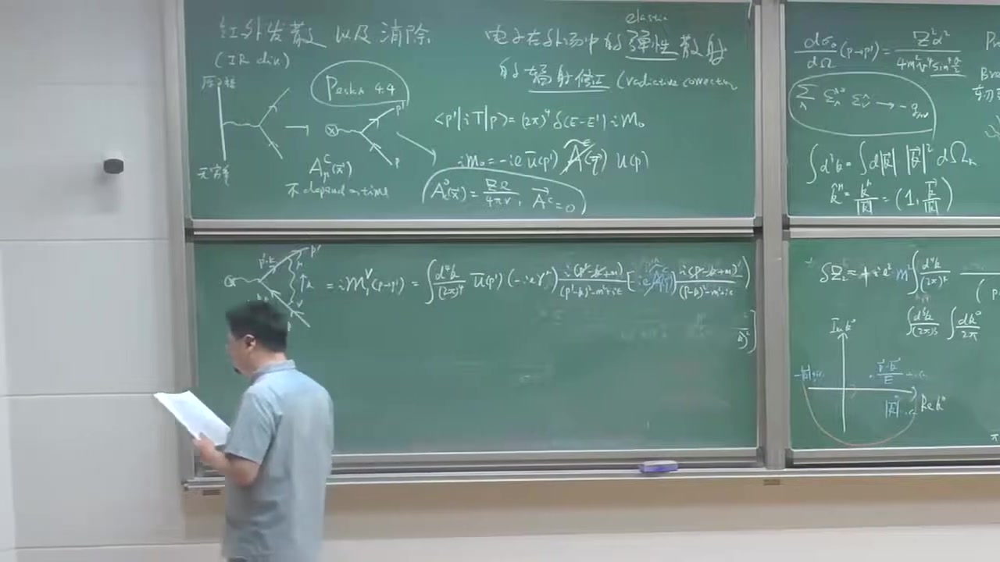


注解¶
以下是对视频片段（00:55:01 ~ 01:03:22）的深度注解：
1. 核心公式与符号解析¶
本段视频主要讲解了顶点修正（Vertex Correction）的计算，特别是如何提取其中的红外发散部分。
1.1 顶点修正的费曼积分表达式¶
根据费曼规则，单圈顶点修正的振幅可以写为：
- \(\bar{u}(p'), u(p)\)：出射和入射电子的旋量。
- \(k\)：虚光子的环路动量。
- \(\frac{i(\not{p} - \not{k} + m)}{(p-k)^2 - m^2 + i\epsilon}\)：电子传播子。
- \(\frac{-ig_{\mu\nu}}{k^2 + i\epsilon}\)：光子传播子。
- \(-ie\gamma^\rho A_\rho^c\)：电子与经典外场相互作用的顶点。
1.2 软光子极限（Soft Limit）与 Eikonal 近似¶
与计算自能图类似，为了提取红外发散，我们考虑虚光子动量 \(k \to 0\) 的软光子极限。 在分母中：
在分子中，利用狄拉克方程 \(\not{p}u(p) = mu(p)\) 和 \(\bar{u}(p')\not{p}' = m\bar{u}(p')\)，以及 Gamma 矩阵的反对易关系，可以化简分子。
1.3 顶点修正的红外发散部分¶
经过化简和复平面围道积分（留数定理，选择下半平面的极点 \(k^0 = |\vec{k}| - i\epsilon\)），顶点修正的红外发散部分可以因子化为树图振幅 \(\mathcal{M}_0\) 乘以一个积分因子：
- \(\mathcal{M}_0\)：树图级别的弹性散射振幅。
- 积分部分表现出对数级的红外发散（当 \(|\vec{k}| \to 0\) 时，积分测度为 \(d^3k \sim |\vec{k}|^2 d|\vec{k}|\)，分母有 \(|\vec{k}|^3\)，导致 \(\int \frac{d|\vec{k}|}{|\vec{k}|}\) 的发散）。
2. 核心概念通俗解释¶
- 顶点修正（Vertex Correction）：在电子与外场发生散射时，电子在散射前后发射并重新吸收一个虚光子。这相当于对相互作用顶点进行了修正。
- 因子化（Factorization）：在软光子极限下，复杂的单圈图振幅可以分解为“树图振幅”乘以一个“发散积分因子”。这说明红外发散的结构是普适的，与具体的硬散射过程（树图部分）解耦。
- 围道积分与极点：为了计算 \(d^4k\) 积分，通常先对能量 \(k^0\) 进行复平面上的围道积分。传播子分母提供了复平面上的极点。通过选择合适的闭合路径（如包围下半平面的极点），利用留数定理可以完成 \(k^0\) 积分，将四维积分降为三维动量积分。
3. 板书截图描述¶
截图中展示了黑板上的推导过程： * 左侧黑板：画出了顶点修正的费曼图，并写出了对应的费曼积分表达式（如 1.1 节所示）。 * 右侧黑板：展示了复平面上的极点分布图（实轴为 \(\text{Re } k^0\)，虚轴为 \(\text{Im } k^0\)），说明了如何通过围道积分处理 \(k^0\) 积分。同时列出了软光子极限下的近似公式。
段落 10：虚修正振幅平方与实发射结果对比¶
时间： 01:03:30 ~ 01:10:29
📝 原始字幕
好 刚才按掉我们的这个画的飞慢图 我们在澳大利亚发整幅呢 我们需要把这几项 三张的加起来一起 是吧 这一下 这一下 让我们做这样的事情 在澳大利亚发的一次方 我的谈用三下的这个整幅呢 我可以写成M1 PWP 等于M1 我叫Delta Z 自能部分 加M1 VTX部分 我们知道它可以让M0 Delta Z2 加上M1V 是吧 刚才呢 我都有结果 你把它带入 它带M0可以提出去 有个腹的一方 有个第三K 二拍的三次方 现在我也是一个三脑机分 因为我用了违道机分 把K0干掉了 然后就是定理告诉我 K0V等K 是吧 你发现它带鱼 这几个 二分一 二P点 P点K 出去P点K 进去P方 我把M方形成P方 反正它在切无所谓 P点K的平方 进去P点平方 P点平方 好 大家看啊 刚才我考虑的十秋证 辅射一个光子 软光子的时候 我这个 已经出现了什么 大家去看啊 原来这个长得非常非常类似 是吧 好 我先上来说 把这个 做一个球座标的一个变换 把调明一个 第几小机分 给它和平在一起 把它出去 黑hike 出来的K平方 我做个手脚 大家可以看到它等于什么 等于 M0 腹的 而发 出一 二拍 非常非常漂亮 我可以把它写成 DK 然后出一 DK的摩 出一K的摩 然后诚意 我刚才完全一样的 应用的让一个 无两缸的一个 脚平均的一个 一个结果 是吧 然后这个机分的 DK出一K 想了 在K均里那儿 我发现了 当然不要忘了 在考虑石头之后 我已经给大家 引用了一个红外阶段 我在一个理论计算里面 我必须采用 同样的一个 红外阶段 所以 我这里必须也有难的 OK 那基本上 原来上来说 我不许太大 因为太大的号软件 就破坏了 但是它是闹个 其实闹个它 其实不是很敏感 所以说 原来上来说 我可以 请名字蓝的 这大蓝的 它可以是 熬的我的质量 或者我的动量转移 我的Q 等于我的P 剪P 就是可以的 是吧 也都没关系 因为它闹个依赖 好 那这里做出来以后 你发现它等于 不能熬到MQ的 因为付的R 出于R 派 闹个大蓝的 出于小蓝的 然后 成于我的这样一个 爱韩束 好 现在我们就 就比较 比较精彩的这个地方 就要到来了 我们要看一下这个 我们现在把所有的这个 2.2 把东西都准备一下 我们考察一下 我们做感兴趣的节面 所以我们需要对这样一个政府 作为一个对于 对于P到P 一撇的这样一个 1到1的过程 可以去模拼方 我们知道它等于什么 它等于M0 波温熬的 加上M1 是吧 这是刚刚算的M1 的模拼方 等于波温熬的 不敢政府的模拼方 应该很容易 按照加上两倍的十步 M0 成于M1的复工 再加点点点 你不用考虑 M1的模拼方 因为它是更高解的 我们现在只是考虑熬到R法界 好吧 所以你发现 你带入这个M1 它 所以你发现它这个表达是它等于什么 M0的模拼方 成于一个1减去 R法出一派 Log Log的模拼方 除以小Lm的 小Lm的什么 红外正化紫 I V I 韩数 这是R法 所以说我们这样 现在我忽略了这个 高階的二階的小量 好 好长看下 这个需求证明现在已经算完了 模拼方 你知道了 它也一样依赖 小Lm的红外正化 而它是否要负的 回想 我们这个 跟它发现一个软的光子 实求证 跟它非常方便类似 那我们现在来 考察一下 他们到底是 有什么性质 我们可以对比一下 回一下我们的这样一个 好 现在我们可以写一下我们的这样一个 对于Watercraft 还是一体到一体 一到一的一个过程 一到批一批 它等于 我的 不好的微声节面呢 再成一个音子 是吧 一键 R法 推判 Lm的 推小Lm的 I 韩数 V V 批 加O R法 这是我的 需求证 Watercraft OK 好 刚才 我扶这个软光子 当然记得是 批到批一批 加上一个光子 光子 动量 是小幼的 探测器的分辨的预值 能量预值 它等于什么
课程截图：


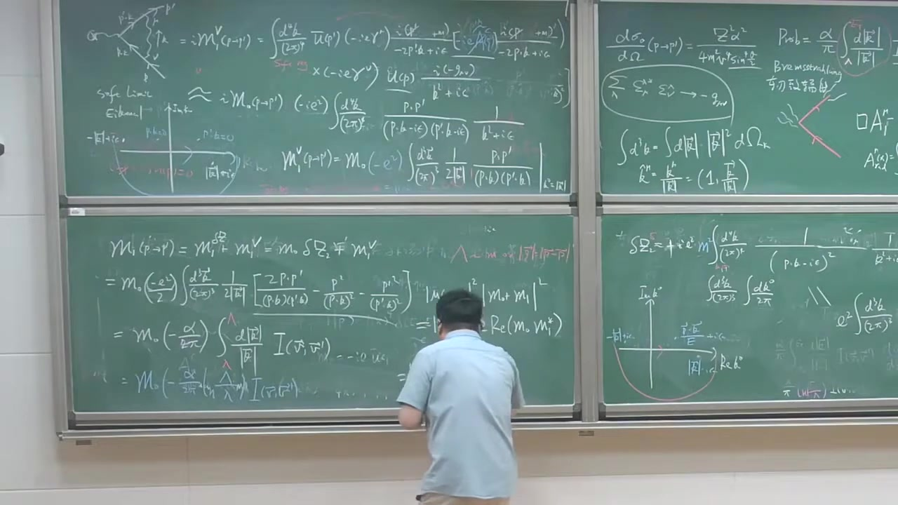
注解¶
以下是对视频片段（01:03:30 ~ 01:10:29）的深度注解：
1. 核心公式与符号解析¶
本段视频主要讲解了如何将虚光子修正（包括电子自能修正和顶点修正）组合起来，计算其对散射截面的贡献，并明确提取出红外发散项。
1.1 虚修正总振幅的组合¶
在单圈（\(\mathcal{O}(\alpha)\)）阶，虚光子带来的总修正振幅 \(\mathcal{M}_1\) 是自能修正（波函数重整化 \(\delta Z_2\)）和顶点修正 \(\mathcal{M}_1^V\) 的总和：
其中 \(\mathcal{M}_0\) 是树图（领头阶）振幅。
1.2 动量积分与留数定理¶
将具体的表达式代入后，可以提取出公因子 \(\mathcal{M}_0\)。对于环路动量 \(k\) 的四维积分 \(\int d^4k\)，通过在复平面上对能量分量 \(k_0\) 使用留数定理（围道积分），可以把 \(k_0\) 积分掉（取极点 \(k_0 = |\mathbf{k}|\)），从而将四维积分降维成三维动量积分：
被积函数中包含了类似于 \(\frac{p \cdot p'}{(p \cdot k)(p' \cdot k)}\) 的项。
1.3 红外截断与积分结果¶
在进行三维动量积分（\(d^3k = |\mathbf{k}|^2 d|\mathbf{k}| d\Omega\)）时，对于软光子（\(|\mathbf{k}| \to 0\)）区域，积分会出现 \(\int \frac{d|\mathbf{k}|}{|\mathbf{k}|}\) 的对数发散。 为了处理这个发散，引入了红外截断 \(\lambda\)（可以看作赋予光子一个极小的虚拟质量）和紫外/运动学上限 \(\Lambda\)（通常是动量转移 \(Q\) 或电子质量 \(m\) 的量级）。积分结果正比于：
其中 \(I(\mathbf{v}, \mathbf{v}')\) 是与初末态电子速度相关的角度积分函数。
1.4 虚修正的微分散射截面¶
计算包含单圈虚修正的截面时，需要对总振幅求模平方。保留到 \(\mathcal{O}(\alpha)\) 阶：
忽略更高阶的 \(|\mathcal{M}_1|^2\) 项。最终得到的虚修正截面（Vertex Correction）为：
这里 \(\left(\frac{d\sigma}{d\Omega}\right)_0\) 是树图阶的截面。
2. 理论背景补充¶
- 虚修正的红外发散：在量子电动力学（QED）中，当环路中的虚光子动量趋于零时，会导致积分发散。正如公式所示，当红外截断 \(\lambda \to 0\) 时，\(\log(\Lambda/\lambda) \to \infty\)，这意味着纯粹的虚修正截面是发散的（且为负无穷大），这在物理上是无意义的。
- 为抵消发散做准备：视频最后提到，这个虚修正的结果与之前计算的实软光子辐射（Real soft photon emission）的结果“非常非常类似”。在真实的物理测量中，探测器具有能量分辨率阈值，无法区分“弹性散射”和“伴随极低能软光子发射的散射”。将这两者的截面相加，红外发散 \(\log(\lambda)\) 将会神奇地精确抵消（即 Bloch-Nordsieck 定理）。
3. 通俗概念解释¶
- 把图“拼在一起”：计算量子修正就像算账。树图是“本金”，自能图和顶点图是“利息”。我们要把这些修正项加在一起，看看总共对概率（截面）有多大影响。
- 留数定理“降维打击”：原本要对光子的能量和三个空间动量方向（共4个变量）做积分，非常复杂。利用复变函数中的留数定理，可以把能量那个变量“吃掉”，变成只对三维空间动量做积分，大大简化了计算。
- 对数发散的出现：算到最后发现，修正项里有一个 \(\log(\Lambda/\lambda)\)。如果光子质量 \(\lambda\) 真的为0，这个修正项就变成了无穷大，而且是负的！这说明我们目前的理论计算还不完整，必须结合实际的探测过程（实光子辐射）一起来看。
4. 截图板书描述¶
截图中展示了黑板上的推导过程： * 上部：写有顶点修正 \(\mathcal{M}_1^V(p \to p')\) 的积分表达式，展示了如何通过留数定理将 \(k_0\) 积分掉，留下 \(\int \frac{d^3k}{(2\pi)^3} \frac{1}{2|\mathbf{k}|}\) 的形式。 * 中部：老师正在板书总振幅的组合公式 \(\mathcal{M}_0(p \to p') = \mathcal{M}_0 + \mathcal{M}_1^{\delta Z_2} + \mathcal{M}_1^V = \mathcal{M}_0 (1 + \delta Z_2) + \mathcal{M}_1^V\)。 * 右侧：画有复平面极点的示意图（用于说明留数定理的积分路径），以及微分散射截面 \(\frac{d\sigma}{d\Omega}\) 的相关公式。
段落 11：实虚相加后的红外抵消与KLN思想¶
时间： 01:10:29 ~ 01:16:15
📝 原始字幕
它等于 用的 R法推判 L 它基本上现在手的 它等于 能量预值 一T T代表Swash手的 它看 它依赖有的 人们以为 红外正红画子 小Lm的 然后呢 I 微 微批 加上 高级 小Lm 大家看一下 这个非常过去 这两项呢 有些戏主 很容易复杂 但是它是一样 所以 烙个Lm的 一个是否一个正好 所以呢 现在可以这样 实验上 到底测量有什么东西呢 我们要问实验家一个问题 实验家测量一个弹性散任过程 是吧 它关得到电子 到电子 因为这个光子 太软 它看不到 所以它看到了 还是这个弹性过程 所以说 这两部分都贡献 对身上来说都一样的 都是出它电子 那么它一个偏着的电子 OK 所以我需要把两部分加起 所以呢 所以我需要把 这是 real correction real移民什么 实发射 我可以写成 我戳的部分 加上我的 real的部分 然后呢 另外一个非常有趣的一个线像发生了 把两下加起来 你可以观察到呢 它等于 一简去 而发出一派 然后落个 立陶蓝的 这个红化精红化纸呢 然后正式被消掉了 它呢 现在是这个蓝的 大的蓝的 大蓝的有点 很小我还写成 这有写成 蓝的无所谓 反正这是一个 out of cue out of m那个东西 等会儿给大家在 去原谅一下 好 大家看这边是 这边是里面 落个蓝的 小蓝的已经 被底销了 已经不见了 已经被底销了 我们人们已经进了 一个红化纸红化纸 已经不见了 现在正式是一个 实验家 可以告诉 一个 能量预执 和一个 out of cue的 一个硬的 一个 一个指标 这就是我们 具体展示了 在out of m的 我们的红爱发散呢 如何被移除的 如何被底销的 这是 一个 通我们显示的 一个计算 我们给大家具体验证了 它非常 非评用 正好是 把实修证 加修证 所以说 实修证和 修证的 这样子底销方式 这是一个 非常 非常journal的 panter 一个非常 普世的一种 一种 饭式 你可以 有非常 一种 定理能保证 在标论的所有 接着 都成立 有非常 出门 两种定理 一个 可能是 Block Notify 可以定理 就是对于 QD 有一个 Message的一个 电子 OK 你将来看来 QCD 它有更复杂的 就是它 除了 soft发生它 有说 口令也 还有贡献发散 所以说 离得到 KLN定理 它保证了你 就说 你必须考虑什么 你必须把 说这种 简病的 态量都要考虑 比如说 我一个电子 和一个电子 加个非常软的光子 实际上来说 都用的是个电子 这两个态量 简病的 你把这种态量 必须都要考虑进来 换发散的 它们可以保证 在为了 组织可以提消 我们其实 就是最简单的那个例子 给大家 简具体验证 就是说 这个教训的时候 我们应该关心什么 我们 应该关心实验家 到底能看什么东西 OK 所以一点要点 说实验家呢 你要知道 实验家能做什么事情 实验家的这个 光子存在器呢 它是有临敏度的 是吧 所以软光子的动量 如果太小的话 实验家根本不知道 所以它把你 还是当成一个 贪心散着过程 所以这一次 说我们需要 考虑到 石修正 我们也考虑 虚修正 然后发现 我们认为你那个 捞个小的 蓝蓝的 被严格抵消 所以我们得到结论呢 是一个 minifold 有意的一个结论 好 最后 考虑一下 这个大蓝的一般大约 大概1T 所以这捞个正的 这符合复的 我可以论正这个i 这符合复的 你发现 是向下的一个修正 是吧 就是贪心散摄的这种 几率呢 继续考虑不大 OK 那我们现在 花点时间呢 我们把这个i 寒说我们 给大家 简单看看 什么东西 这也是 很有意思的物理 按照定义的 我们都知道它等于
课程截图：


注解¶
以下是对视频片段（01:10:29 ~ 01:16:15）的深度注解：
1. 核心公式与符号解析¶
本段视频主要讲解了如何将虚修正（Virtual Correction）和实发射（Real Emission）的截面相加，从而消除红外发散（Infrared Divergence），得到物理上可观测的有限结果。
1.1 虚修正与实发射截面的相加¶
在之前的推导中，虚修正（单圈图）和实发射（韧致辐射）的微分散射截面分别包含红外发散项 \(\ln\lambda\)（其中 \(\lambda\) 是引入的极小光子质量，即红外截断）。 当我们将这两部分相加时：
根据板书和讲解，相加后的结果为：
- \(\frac{d\sigma_0}{d\Omega}\)：树图阶（领头阶）的弹性散射微分截面。
- \(\alpha\)：精细结构常数。
- \(\lambda\)：红外截断（极小光子质量），在相加过程中精确抵消，不再出现在最终公式中。
- \(E_T\)：实验探测器的能量阈值（Energy Threshold）。如果辐射出的软光子能量小于 \(E_T\)，探测器无法分辨，会将其误认为纯弹性散射。
- \(\Lambda\)：紫外截断或硬标度（通常与动量转移 \(Q\) 或电子质量 \(m\) 有关），代表高能尺度的截断。
- \(I(\mathbf{v}, \mathbf{v}')\)：依赖于初末态电子速度的积分因子。
2. 核心概念通俗解释¶
2.1 为什么红外发散会抵消？（KLN定理的体现）¶
在理论计算中，虚光子修正（电子发射并重新吸收一个软光子）和实光子发射（电子发射一个极软的光子飞向无穷远）都会产生无穷大（红外发散）。 物理原因：实验探测器是有分辨率极限的（能量阈值 \(E_T\)）。当一个光子的能量极低（软光子）时，探测器根本“看”不到它。因此，探测器测量到的所谓“弹性散射”，实际上包含了纯弹性散射（加虚修正）和伴随极软光子发射的非弹性散射。 当我们把这两种在实验上不可分辨（简并）的末态概率加起来时，理论上的无穷大（\(\ln\lambda\)）奇迹般地相互抵消了。这就是著名的 Bloch-Nordsieck 定理（在QED中）和更普遍的 KLN 定理 (Kinoshita-Lee-Nauenberg Theorem) 的具体体现。KLN定理保证了在任何规范场论（包括QCD）中，只要对所有初始和最终的简并态求和，红外发散必然抵消。
2.2 最终结果的物理意义¶
抵消发散后，我们得到了一个有限的、有物理意义的（meaningful）结果。 公式中的修正项是负的（因为 \(\Lambda \gg E_T\)，\(\ln(\Lambda/E_T) > 0\)，且 \(I > 0\)）。这意味着，考虑了辐射修正后，纯弹性散射的概率实际上是降低的。物理上很好理解：电子在加速/减速过程中总是有一定概率辐射出光子，这部分概率“抢走”了原本属于纯弹性散射的份额。
3. 板书截图描述¶
截图中，老师正在黑板右侧书写虚修正和实发射截面相加的过程。 * 上方公式展示了实发射（Bremsstrahlung）的概率积分。 * 下方公式展示了相加后的总截面：\(\frac{d\sigma}{d\Omega} = \frac{d\sigma_0}{d\Omega} [1 - \frac{\alpha}{\pi} \ln\frac{\Lambda}{\lambda} I + \dots] + \frac{d\sigma_0}{d\Omega} [\frac{\alpha}{\pi} \ln\frac{E_T}{\lambda} I + \dots]\)。 * 可以清晰看到，两项相加后，包含 \(\ln\lambda\) 的项一正一负被划掉（抵消），最终合并为包含 \(\ln(E_T/\Lambda)\) （或 \(\ln(\Lambda/E_T)\)）的有限项。
段落 12：角函数I的解析形式与共线发散¶
时间： 01:16:15 ~ 01:23:50
📝 原始字幕
第1个K 所以 四派 RP RP RP RK RP RK RP RK RK RK RM RP RK 这个几分都特别好几 第1个几分 被几遍了呢 来一点 比如说你很容易验证 第1个K 四派 派证上也有 I'm from 3P DOTKAT 平方 等于什么呢 原来它等于1 OK 这个几分 稍微难做一点 但是呢 你以为它做出来 由于是这个原因呢 我就 给大家 不讲 昨天推到过程的 我觉得告诉大家 二简去 四按摩方 Q方 处于 更好 一简 四按摩方 处于Q方 那个落个韩束 落个 更好 一简 三摩方 Q方 加一 更好 一简 四按摩方 Q方 减一 然后呢 减二 OK 这个韩束呢 有点复杂 其中呢 Q方 等于 P减P 平方 崩浪转移的算法 你可以验证 都我们的例子来说 它是小于零的 OK 所以这都是 更好的 都是正的 都大于一的 所以都是 当然有个 比较有趣的例子 我们过程如果做个几件拖 那可以 变成两个例子 都在漠谈 然后呢 这个图呢 也可以通账结论 挨发得也可以得到 你发现这里面 由于 这个Q方是 S 就变成什么 更好的东西呢 就是每个例子的速度 它是小于一的 所以这里面 发现到落个里面的 这边那边复杂里面 你会突然一个 派一个虚补是吧 所以你会得到这种 I派出意 Beta Beta代表这个 例子的速度 这样一个虚的一个因子 如果例子的相同速度 它一个Beta分立发散 这个东西就注文了什么呢 苦轮发散 或者苦轮Face 苦轮向位 它有个虚补 OK 你可以论证这个苦轮Face 其实 在Crossen来过 在节面来过这个虚补 并不贡献 OK 这顺便说一下 我们认识感兴趣的是 在高冷级线 高冷级线 我们来复的Q平方 去年无重大 而复的Q平方 远远大家有质量平方 极端相论的情形 就是这个电子的散射 动作转移 非常非常大 是个高冷散射的 高冷弹性散热过程 你要在几件下呢 这个表达是得到当上减化 可以形成2倍的 烙个复的Q平方 处于M方 减2 大家看这里面又处于个烙个 这个烙个里面是 动量转移的Q平方 复平方处于M平方 你连这块奇怪 为什么 这里面会有个电子的一个质量平方呢 如果能量特别高的时候呢 电子的质量呢 你可以近似可以忽略掉 是吧 但是这时候你发现不行 这就有发散 是吧 这个对着发散 这个物理是什么呢 这个物理是这样子 其实你可以考虑这样计算 我们考虑这一项 其实你可以 我们让这点经典的这个人 这辐射的时候 你知道这辐射呢 它都是 严重出态例子的这个运动方向 或者是墨毯业的运动方向 我们考察一个机分 非常简单 地考散Cita 我们考察这样一个机分 P点K Hat分之一 我们认为这个 我们推简单研弹这个P 我们让它研弹Z K呢 我们叫Cita OK 然后 这个口战是 到4大丑0到5 所以复一到1 所以你写写的话 你可以发现它等1 1分之1 复一到1 地考散Cita 好分母呢 它的名 1简V考散Cita V等是这个 例子的这个运动 有一个速度 它等于P 动量出于能量是吧 好 这个机分呢 不难机 很难容易提出 等于1 分之1 维分之落格 1加V 1简V OK 或者你做点手脚 你可以证明它等于 动量分之1 落格 2倍的动量平方 复一M方 所以你发现呢 它有个落格 按电子直量平方出现了这个落格里面 这是为什么呢 你考察一下这个发展的实在是什么地方 这个发展来源来源 来源的微圈1的时候 落格发散是吧 当电子 如果是考虑是 完全是零质量的时候呢 这个电子的运动速度 本来是1的话 你发现有个1件口战C它 OK 当C它居然零的时候呢 你发现这个东西呢 是发散的 OK 这发展物理来源是什么呀 是个电子 一个零质量的电子 批竭成一个跟它平行运动的光纸 所以你考虑个分曼图 就是电子 这电子成波纸 这光纸 如果跟它光纸的方向呢 如果平行运这个电子 两个呢 例子都是零质量 两个都是 Messless Particle的话 你发现了传播纸呢 是P点K呢 Particle 0 因为P平云K 是吧 这种发声的当两个 加角等于零度的时候 发声呢 就考虑你的大陆真实 考虑你的 我说了一年 叫供线发散 OK 它来源就是 因为有零质量的例子 再辅射出一个零质量的例子 当它们两个运动方向 平行运动的时候呢 这个发声呢 也属于 广阴的确也属于红二发散 但是我们刚才讲的发声 就是说Soft的大伙人 叫软发散 这是另外一种新型的红线发散 你发现呢 给电子一个质量的话呢 它就能卡套不斩红线发散 所以这个电子质量呢 你可以说是一个供线发散的 Clind out人士的一个 一个中文化质 OK 好的 那现在呢 我们考虑这个极限呢 这个极限呢
课程截图：
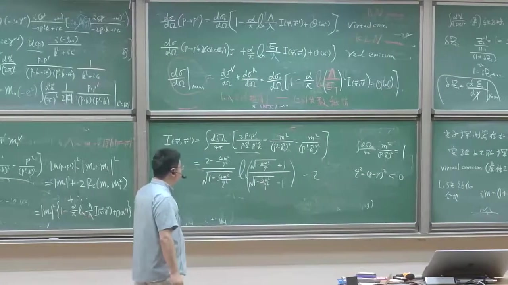
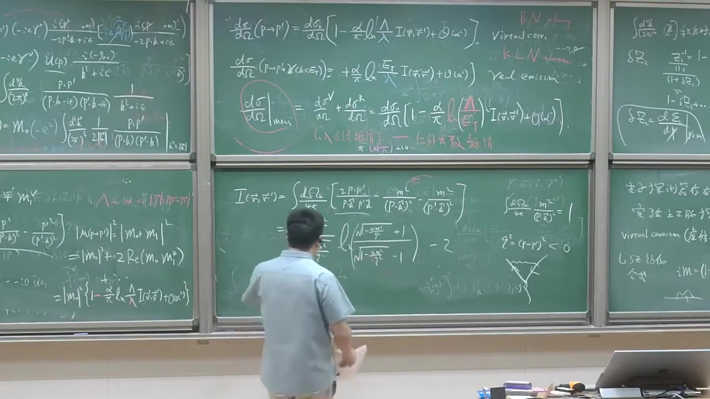

注解¶
以下是对视频片段（01:16:15 ~ 01:23:50）的深度注解：
1. 核心公式与符号解析¶
本段视频主要探讨了积分 \(I(\vec{v}, \vec{v}')\) 的具体形式，以及在高能极限（极端相对论极限）下的行为，并引出了共线发散（Collinear Divergence）的概念。
1.1 积分 \(I(\vec{v}, \vec{v}')\) 的解析结果¶
视频中给出了积分 \(I(\vec{v}, \vec{v}')\) 的解析结果：
- \(m\): 电子质量。
- \(q^2 = (p - p')^2\): 动量转移的平方。在散射过程中，通常 \(q^2 < 0\)（类空）。
- 物理意义: 这个复杂的函数描述了红外发散项的系数。由于 \(q^2 < 0\)，根号内的项 \(1 - \frac{4m^2}{q^2} > 1\)，因此对数函数的参数是正实数。
1.2 库仑相位（Coulomb Phase）¶
视频提到，如果考虑初态和末态粒子都在同一方向（例如前向散射），或者考虑某些特定极限，对数函数内部可能会出现负数，从而产生一个虚部：
- \(\beta\): 粒子的速度。
- 物理意义: 这个虚部被称为库仑相位（Coulomb Phase）。它反映了带电粒子在长程库仑势中运动时积累的相位。在计算散射截面（取模平方）时，这个纯虚数相位因子不会产生可观测的物理效应。
1.3 高能极限（极端相对论极限）¶
在高能极限下，动量转移非常大，即 \(-q^2 \gg m^2\)。此时，积分 \(I(\vec{v}, \vec{v}')\) 可以大幅简化：
- 物理意义: 即使在能量极高、电子质量 \(m\) 似乎可以忽略不计的情况下，公式中仍然保留了 \(\ln(m^2)\) 项。如果直接令 \(m \to 0\)，这个对数项将趋于无穷大。这表明存在另一种类型的发散。
1.4 共线发散（Collinear Divergence）的来源¶
为了解释为什么 \(m \to 0\) 时会出现发散，视频用一个简化的积分模型进行了说明。考虑一个无质量电子发射一个无质量光子的过程，积分形式类似于：
- \(v\): 电子速度。对于无质量粒子， \(v \to 1\)。
- \(\theta\): 电子和发射光子之间的夹角。
- 物理意义: 当 \(v \to 1\) 且 \(\theta \to 0\)（即 \(\cos\theta \to 1\)）时，分母 \(1 - v\cos\theta \to 0\)，导致积分发散。这种发散发生在发射的光子与电子平行（共线）运动时，因此被称为共线发散（Collinear Divergence）或质量奇点（Mass Singularity）。
- 电子质量的作用: 电子的非零质量 \(m\) 使得 \(v < 1\)，从而截断了这种共线发散。因此，电子质量在这里起到了共线发散的正规化子（Regulator）的作用。
2. 核心概念通俗解释¶
- 高能极限下的质量残留: 在经典物理中，如果物体的动能远大于其静止质量，我们通常可以忽略质量。但在量子场论中，即使在极高能量下，电子质量 \(m\) 仍然以对数形式 \(\ln(m^2)\) 存在于修正项中。这是因为质量不仅代表惯性，还决定了粒子发射辐射的角分布特性。
- 共线发散（Collinear Divergence）: 想象一辆高速行驶的汽车（电子）向前抛出一个小球（光子）。如果汽车的速度接近光速，且小球抛出的方向与汽车前进方向完全一致，那么在相对论效应下，计算它们之间的相互作用会遇到数学上的无穷大。这就是共线发散。只要汽车（电子）有一点点质量，它的速度就达不到光速，这个无穷大就可以避免。
3. 板书截图描述¶
截图中展示了黑板上的公式推导。 * 右侧黑板（下半部分）: 详细写出了积分 \(I(\vec{v}, \vec{v}')\) 的解析表达式： \(I(\vec{v}, \vec{v}') = \frac{2 - \frac{4m^2}{q^2}}{\sqrt{1 - \frac{4m^2}{q^2}}} \ln\left( \frac{\sqrt{1 - \frac{4m^2}{q^2}} + 1}{\sqrt{1 - \frac{4m^2}{q^2}} - 1} \right) - 2\) 旁边标注了 \(q^2 = (p-p')^2 < 0\)。 * 左侧和上方黑板: 保留了之前关于虚修正和实发射截面相加消除红外发散的公式。
段落 13：高能极限下的Sudakov双对数¶
时间： 01:23:50 ~ 01:27:20
📝 原始字幕
付得Q平方 动了长硬特别大的时候呢 高能极限呢 这个极限呢 也叫肃达咖啡 极限 肃达咖啡里面 OK 在这几天下呢 其实你可以 验证一年事情 好 我们刚才在写一遍 如果考虑一个 虚修正的红线的话 批到批一批 你可以约等于 波恩澳的这个咖啡 一简去R发出一盘 Log 付得Q方 出一盘方 这首的 现在我的爱寒暑 直接提醒上让一个 领头接的一个 Log寒暑 然后Log 然后 小的Lambon 红卖阶段 我刚才写着Lambon 大了Lambon的平方 但你可以发现呢 去做一做 就是你示范这个大Lambon 在肃达咖啡里面的话 也可以换成我的Q 付得Q平方 OK 所以对于用 虚修正 第四个MOD 我们一个 批到批一批 加一个软光纸 你可以约等于 波恩澳的微纷结面 然后呢 成一个 正的R发出一盘 这个爱寒暑 还是一样的 变成Log付得Q方 出一盘方 然后呢 这里面会出现什么呢 会出现这个Log 这个是 1T的平方 对不起 我们还阶段 Lambon的平方 然后这个甩手的 他能量预执的平方 好 现在你考虑这个测量 那这样一个微纷结面 你一个要把 虚修正和虚修正 可以加到这七点 然后 你发现呢 2加到这七 第四个MOD 我们一个 就实际上加测量了 两个弹性 散下这个结面 约等于 第四个MOD 哦 丢MOD 1 进去 R发出一盘 Log 另外一个Log 第1个Log 呢 我的字编量是 付Q方 出一盘方 我的I-NJ 只要像 澳大法界 好 这个我们现在叫起源 这个起源呢 是有电脑质量 所以这个起源来自爱寒暑 所以这里面是一个 由于贡献的发散 到搞这个大对手 口令的大耳朵人士 而这个呢 受得 Soft大耳朵人士 好 这有个 Log负的Q平方的平方那种形式呢 这就是非常非常著名的 所谓的 苏达科 苏达科 不是俄罗斯的一个 武力训加 这共同应该还五十年来做的 叫苏达科 DoubleLog DoubleLog 叫苏达科 双对手箱 OK 这是著名的 苏达科 上对手箱 这个PASS可能说呢 其实我们现在展示到 澳大耳法界的 这种方式的形式 其实PASS的时候
课程截图：

注解¶
以下是对视频片段（01:23:50 ~ 01:27:20）的深度注解：
1. 核心公式与符号解析¶
本段视频主要探讨了在高能极限（极端相对论极限，\(-q^2 \gg m^2\)）下，散射截面的渐近行为，并引出了量子场论中非常著名的Sudakov 双对数（Sudakov Double Logarithm）概念。
1.1 高能极限下的单圈虚修正截面¶
在高能极限（也称为 Sudakov 极限，\(-q^2 \gg m^2\)）下，仅考虑单圈虚修正（Virtual Correction）时，微分散射截面的领头项（Leading Term）可以近似表示为：
- \(\left(\frac{d\sigma}{d\Omega}\right)_{\text{Born}}\): 树图阶（Born 阶）的微分散射截面。
- \(\alpha\): 精细结构常数。
- \(-q^2\): 动量转移的平方（在高能极限下，\(-q^2\) 很大）。
- \(m\): 电子质量。
- \(\lambda\): 引入的极小光子质量，作为红外截断（Infrared Cutoff）。
- \(\ln\left(\frac{-q^2}{m^2}\right)\): 源于共线发散（Collinear Divergence）的对数项（当 \(m \to 0\) 时发散）。
- \(\ln\left(\frac{-q^2}{\lambda^2}\right)\): 源于红外发散（Infrared Divergence）的对数项（当 \(\lambda \to 0\) 时发散）。
注：视频中提到，在 Sudakov 极限下，红外截断 \(\lambda\) 也可以被替换为 \(-q^2\) 相关的量，但这并不改变双对数的本质结构。
1.2 包含实发射的物理可观测截面¶
为了消除红外发散 \(\lambda\)，我们需要将虚修正与软光子实发射（Soft Photon Real Emission）的截面相加。相加后，红外截断 \(\lambda\) 被探测器的能量分辨率阈值 \(E_{\text{th}}\)（视频中称为“软光子能量阈值”或类似概念，字幕识别为“能量预执”）所取代。 最终的物理可观测截面（包含虚修正和软光子发射）在高能极限下近似为：
- \(E_{\text{th}}\): 探测器能够分辨的最小光子能量（能量阈值）。任何能量低于 \(E_{\text{th}}\) 的光子都无法被探测器与弹性散射区分开来。
- \(\ln\left(\frac{-q^2}{E_{\text{th}}^2}\right)\): 这一项取代了原来的红外发散项，它依赖于具体的实验测量条件（探测器分辨率）。
2. 核心概念通俗解释¶
2.1 Sudakov 双对数 (Sudakov Double Logarithm)¶
在上述公式中，修正项包含两个对数函数的乘积：\(\ln\left(\frac{-q^2}{m^2}\right) \times \ln\left(\frac{-q^2}{E_{\text{th}}^2}\right)\)。这种形式被称为Sudakov 双对数。 * 物理意义：它代表了在高能散射过程中，同时发生软辐射（能量极低）和共线辐射（与发射粒子方向极近）的概率。 * 起源： * 第一个对数 \(\ln\left(\frac{-q^2}{m^2}\right)\) 来自于共线发散（质量奇点），即当辐射出的光子与电子几乎平行时产生的增强效应。 * 第二个对数 \(\ln\left(\frac{-q^2}{E_{\text{th}}^2}\right)\) 来自于红外发散（软发散），即辐射出的光子能量极低时产生的增强效应。 * 重要性：在高能极限（\(-q^2\) 极大）下，这两个对数项都会变得非常大。即使耦合常数 \(\alpha\) 很小，\(\frac{\alpha}{\pi} \ln(\dots) \ln(\dots)\) 的乘积也可能接近甚至大于 1。此时，微扰论的单圈近似（\(\mathcal{O}(\alpha)\)）不再可靠，必须将所有高阶的双对数项（\(\alpha^n \ln^{2n}(\dots)\)）求和起来，这称为Sudakov 重和（Sudakov Resummation）。
3. 板书/PPT截图描述¶
截图中，老师正在黑板右下角指着一个公式进行讲解。 * 黑板右下角：可以看到老师写下了包含双对数的截面公式： \(\frac{d\sigma}{d\Omega} \approx \frac{d\sigma}{d\Omega}\Big|_{\text{Born}} \left[ 1 - \frac{\alpha}{\pi} \ln\left(\frac{-q^2}{m^2}\right) \ln\left(\frac{-q^2}{\lambda^2}\right) \right]\) 老师的手指正指着 \(\ln\left(\frac{-q^2}{m^2}\right)\) 和 \(\ln\left(\frac{-q^2}{\lambda^2}\right)\) 这两项，强调这就是著名的 "Sudakov Double Log"。 * 黑板左下角：保留了之前关于共线发散（Collinear div）的板书。 * 黑板上半部分：保留了之前关于重整化常数 \(\delta Z_1\) 和 \(\delta Z_2\) 的复杂积分推导过程。
段落 14：多软光子重求和与Sudakov形状因子¶
时间： 01:27:20 ~ 01:33:09
📝 原始字幕
给你展示的 其实你把这种推广 这种思想跟推广的 你展开到这样一个 R法的这个任意节 你发现你可以做一件事情 可以把这种苏达科双对手箱呢 你可以把它 轮扎把它求和 你可以把它 能能临到无穷的 可以全部求和 OK 我们非常快的 给大家把结果展示一下 我们刚才建议用了 一个实修证 我们是考虑的负质一个光子 是吧 现在你可以原谅负责两个 两个光子有两种 交换成性 有两个图 OK 你发现呢 有所谓的这种艾克兰等式 艾克兰等式 你发现这两图加起来呢 它等于 就扶着两个软光子的 这个艾克兰进步的政府呢 它等于扶着一个软光子的 艾克兰Fact的一个平方 所以就可以推广它这个 扶着任意多个这样一个 一个光子 比如说 软光子 我们订一个因子叫 WiFact 等于R法出一派 一个我的iHan数 WiWiPi Log ET出于Lum的 OK 这种刚刚得到了一个 实修正的一个 一个因子 是吧 然后你可以 Check 你可以 你这扶着一个单光子的一个 扶着一个单光子的一个 艾克兰因子 你可以认为它是一个 扶着一个光子 墨太 它墨平方 加上连机分是吧 你可以 得到一个 扶着 N个软光子 每个光子 能量的小于ET P到P 加上N个 Support光子 你发现它可以写成 第4个码零 第1个 N等于零 无穷的 分得结成 挖的N磁方 Y因子 刚才引了这样一个 这样因子 N的结成分离 来自N个光子 是全同例子的 不可分辨性 是吧 然后你发现这个东西 正好是什么呀 正好就是 第4个码零 第1个 Y磁方 所以你发现 这样扶着 N个软的光子 可以把它直说话 其实把它它长上 第一节就得到我们这种形式 是吧 这是石修正 对于虚修正来说 你也可以分析它的 任意界的一个 黄阿发三 你发现它的弓箱 排出能处理 一个大的Expect 它也可以直说话 这非常妙 但是我们 比如说原谅 你可以分析 任何一个 复达复满图 你考虑 既有石修正 是吧 比如说 这温某和排出能够告诉你 如果这光子 虚广子非常软 适当的软的话 它的修正呢 原来都可以Factor 都可以因此法 都可以把它弓箱 虚修正的时候 可以直说话 可以把它承耐起 比如说 最后呢 我们考虑一个谈硬散射 对实验教的谈硬散射 当然它可以办出 很多个软工资 你可以发现它可以写成 只要每一个 一的二的 X 放进去的Y X方我没有讲的是 直说话一个单圈的 握出企业 OK 其实我们分析的定调 就是Z2Factor 最后答案了 你可以写成 Design 0 DOM 然后 一个F 一个F盘数 F是Q方 M方 和ET 的一个盘数 的磨屏方 这个东西呢 大F盘数的 叫肃达克复形状因子 OK 肃达克复 FamaFactor 其中的这个F盘数 等于 直说话 这就是 1-2 F2F短 B2F 2-3 F2 2-4 3-2 F2革控 Dom 2-2 2-3 2-4 1-2 1-2 2-2 2-3 J 1-2 2-3 2-4 你会发现一个很有趣的物理 当Q 富Q产区的目中纳的桥 因为它是指数压力 它把任何密子都要快了很多 这个指数是负的 所以富Q产区的目中纳的桥 你发现这个指数是快速的距离 所以告诉你什么 就是实际上来说 你观察它一个非常硬的一个散射 这种级率为0 所以什么意思 就是一般实际上 你应该伴随什么 就是说你有硬的散射 一定会负出一个硬的光子 就是能量比较高的光子 okay 严格的彈音散射的级率为0 就是因为这个数到cuff的这种 防队所的形式 那最后一点时间
课程截图：


注解¶
以下是对视频片段（01:27:20 ~ 01:33:09）的深度注解：
1. 核心概念与公式解析¶
本段视频主要讲解了在量子电动力学（QED）中，如何将软光子发射的修正推广到任意阶，并引出了著名的Sudakov 形状因子（Sudakov Form Factor）。
1.1 软光子发射的指数化（Exponentiation）¶
视频中指出，对于辐射多个软光子的过程，其贡献可以被“指数化”。 定义一个单软光子辐射的因子 \(Y\)（视频字幕中称为“Y因子”或“WiFact”）：
其中： * \(\alpha\) 是精细结构常数。 * \(E_T\) 是探测器能分辨的最小光子能量（能量分辨率）。 * \(\lambda\) 是红外截断（假想的光子质量）。
对于辐射 \(n\) 个软光子的截面，由于全同粒子的不可分辨性，会产生一个 \(\frac{1}{n!}\) 的对称性因子。将所有可能辐射的软光子数目求和，得到：
这表明，多软光子辐射的实修正（Real Correction）可以写成指数形式。
1.2 虚修正的指数化与 Sudakov 形状因子¶
同样地，任意阶的虚修正（Virtual Correction）在处理红外发散时，也可以被指数化。 将实修正和虚修正结合起来，考虑一个“纯弹性散射”（即没有辐射出能量大于 \(E_T\) 的硬光子），其散射截面可以写为：
其中，指数上的项 \(\exp[-F]\) 被称为 Sudakov 形状因子（Sudakov Form Factor）。
1.3 Sudakov 压低（Sudakov Suppression）¶
视频最后强调了一个重要的物理结论： 当动量转移 \(Q^2 = -q^2 \to \infty\)（极端高能极限）时，函数 \(F \to \infty\)。 由于指数是负的，\(\exp[-F] \to 0\)。 这意味着：在极高能下，发生严格的、没有任何硬光子伴随辐射的纯弹性散射的概率趋近于零。 换句话说，高能散射过程几乎总是伴随着硬光子的辐射。这就是所谓的 Sudakov 压低。
2. 理论背景补充¶
- 全同粒子不可分辨性：在量子力学中，多个相同的玻色子（如光子）处于相同状态时，其多粒子态的归一化需要除以 \(n!\)，这在费曼图的计算中体现为对称性因子。
- 指数化定理（Exponentiation Theorem）：在规范场论中，红外发散的领头项（Leading Logarithms）通常可以被证明能够严格地重组为指数形式。这不仅适用于 QED，在量子色动力学（QCD）中处理软胶子辐射时也极为重要。
3. 通俗解释¶
想象你在打台球（高能电子散射）。在经典物理中，两个球碰撞后各自弹开，干脆利落。但在量子世界里，电子碰撞时会“抖落”出很多光子。 视频里讲的是：如果我们要求这两个电子碰撞后，绝对不抖落出任何能量较大的光子（纯弹性散射），这在低能下是可能的。但是，当碰撞极其剧烈（高能极限）时，电子不可避免地会辐射出光子。你非要找那种“干干净净”不发光的剧烈碰撞，其概率会被一个指数函数（Sudakov 形状因子）强力压制，最终变成零。这就是为什么高能实验中，粒子碰撞总是伴随着大量的辐射产物。
段落 15：软共线有效理论与一般红外定理¶
时间： 01:33:09 ~ 01:36:31
📝 原始字幕
我们简单给大家 把一些中国定理给大家 简单描述一下 就是说 现在的这种方法 有效常用方法 有一种理论叫做 软供线有钱 有效理论 就是soft的考虑年 efective series 它可以 比这个PASS的数 伙伴摩的数 通过这种分析图的方法 更加有效的 严正红外发 所以我觉得消失 可以很容易 比较容易得到 通过冲锋化全能方法 来过从线上 双对手的数到够 所以总体来说 这个对于软发散 红线发散 目前我们人们还是 吃理解的还是非常 非常不错的 很多高阶修正能具体的严正 所有红外发散都可以被抵消 尤其在QD里面没有任何问题 QD里面就说 还有一个叫BlockNoticec定理 都可以完蛋说了 还有更加普世的时候 也任何一个 还有这个Masteless里子的一个场论 比如我们QC地 叫KLN定理 是吧 这是非常漂亮 住门那个定理 就是说 它保证了 就说对任何一个过程 对一个月前过程 如果这个理论的 还有这个Masteless Particle 你把所有的这个 剪辨的墨胎和出胎 这个有限的能量 区间里面都求和 然后它保证 定理保证你的红外发散 就一定能够抵消 这个红外发散 它包含这个 两种发散 一种是我们主要讲的 SoftDowrens 光子的波长 居中五通大的车 还有一个就是 我们刚才提的是考虑的Dowrens 这个红线发散 它QC地里面非常严重 因为QC地里面有胶子是零之量的 它飞而班里 它可以披裂一个胶子 可以变成两个胶子 如果这两个胶子 都是平庆方向的话 都敬私暗示的话 这会有可能的较真实 所以KL定理是非常非常 量子场的里面 非常generated的一个定理 OK 然后这个 文贸的时候 用老师表论 它给了一个 KL定理的证明 OK 它用老师表论告诉你一种 一个S证源 如果 把这个出摊墨它的一些 所谓Degenerate的这种 剪病的这种 它很多 撒谋窝的话 你可以保证的红外发散 全部可以抵销 OK 我们最后的节目是 讲一个 我们算没有学 我们讲一个量子动学例子 非常著名 我们考虑一征一副 到墙子 到所有墙子的 totalker section 我们知道这个QCD 它是一个非常 有去那个 SU3规盘场的 它的基本角度 是夸合胶子 但自然借的
课程截图：


注解¶
以下是对视频片段（00:46:23 ~ 00:49:26）的深度注解：
1. 核心公式与符号解析¶
本段视频主要讲解了在计算电子自能修正（Self-energy correction）时，如何提取场强重整化常数 \(\delta Z_2\)，并重点分析了在软光子极限（Soft Photon Limit）下积分的红外发散（Infrared Divergence）行为。
1.1 费米子传播子分母的展开与近似¶
在计算自能图时，费米子传播子的分母形式为 \((p-k)^2 - m^2 + i\epsilon\)。视频中对其进行了展开：
由于最终要取在壳（On-shell）条件，即 \(\not{p} = m\) 或 \(p^2 = m^2\)，因此 \(p^2 - m^2 = 0\)。分母简化为：
1.2 软光子极限（Soft Limit）下的主导项¶
在软光子区域（Soft region），光子动量 \(k \to 0\)。此时： - \(k^2\) 是关于 \(k\) 的二阶无穷小（\(\mathcal{O}(k^2)\)）。 - \(-2p \cdot k\) 是关于 \(k\) 的一阶无穷小（\(\mathcal{O}(k)\)）。 因此，在 \(k \to 0\) 的极限下，可以忽略 \(k^2\) 项，传播子的分母近似为：
1.3 提取 \(\delta Z_2\) 时的红外发散分析¶
为了得到 \(\delta Z_2\)，需要对自能 \(\Sigma(p)\) 求导：\(\delta Z_2 = \left. \frac{d\Sigma}{d\not{p}} \right|_{\not{p}=m}\)。求导操作会使得传播子分母的幂次增加。 视频中分析了被积函数在 \(k \to 0\) 时的幂次行为（Power counting），以判断是否存在红外发散： - 光子传播子：贡献 \(\frac{1}{k^2}\)。 - 积分测度：\(d^4k \sim k^3 dk\)。 - 求导前的一项：分母包含 \((-2p \cdot k)\)，即 \(\sim \frac{1}{k}\)。结合测度和光子传播子，整体行为是 \(\int \frac{k^3 dk}{k^2 \cdot k} \sim \int dk\)，在 \(k \to 0\) 时是红外收敛（IR safe）的。 - 求导后产生的一项：由于对 \(p\) 求导，分母变为 \((-2p \cdot k)^2\)，即 \(\sim \frac{1}{k^2}\)。结合测度和光子传播子，整体行为是 \(\int \frac{k^3 dk}{k^2 \cdot k^2} \sim \int \frac{dk}{k}\)。这是一个对数发散积分（\(\sim \ln \lambda\)，\(\lambda\) 为红外截断），因此这一项贡献了红外发散（Infrared Divergence）。
2. 理论背景知识补充¶
- 红外发散（Infrared Divergence）：在包含无质量粒子（如光子）的量子场论计算中，当这些无质量粒子的动量趋于零（软极限）时，积分可能会发散。这种发散反映了物理上无法区分“没有发射光子”和“发射了能量无限小的软光子”的状态。
- 幂次法则（Power Counting）：一种快速判断费曼积分在特定极限下（如紫外 \(k \to \infty\) 或红外 \(k \to 0\)）是否发散的方法。通过比较分子和分母中积分变量的幂次，可以确定积分的渐近行为。
3. 核心概念通俗解释¶
- 抓大放小（软极限近似）：当光子能量非常非常小（\(k \to 0\)）时，\(k\) 的平方（\(k^2\)）比 \(k\) 的一次方（\(p \cdot k\)）小得多，就像 \(0.01\) 的平方是 \(0.0001\) 一样。所以在分母里，我们直接把 \(k^2\) 扔掉，只保留主导的 \(-2p \cdot k\)。
- 为什么求导会引出红外发散？：本来积分在 \(k \to 0\) 时是安全的（收敛的）。但是为了算 \(\delta Z_2\)，我们需要对动量求导。根据微积分法则，对分母求导会让分母的平方出现，这就导致分母里 \(k\) 的幂次变大了。分母里的 \(k\) 越多，当 \(k \to 0\) 时，整个分数就膨胀得越厉害，最终导致了积分结果变成无穷大（对数发散）。老师强调，我们现在只关心红外发散，所以可以直接忽略掉那些收敛的项，只保留导致发散的“罪魁祸首”。
4. 板书截图描述¶
截图中展示了黑板下半部分的推导过程。老师正在讲解 \(\delta Z_2\) 的表达式： * 左下角写有 \(\delta Z_2 = \left. \frac{d\Sigma}{d\not{p}} \right|_{\not{p}=m}\)。 * 中间部分是 \(\Sigma(p)\) 的积分表达式，老师用手指向了被积函数中括号内的两项。 * 第一项是未求导前保留下来的部分，老师在上面画了叉，表示它在红外极限下是收敛的，不贡献红外发散。 * 第二项是求导后产生的部分，分母包含 \([(p-k)^2 - m^2]^2\)（近似为 \([-2p \cdot k]^2\)），老师指出这一项是 \(\sim \int \frac{dk}{k}\)，会导致对数红外发散。
段落 16：QCD例子：e+e-到强子总截面与红外抵消¶
时间： 01:36:31 ~ 01:42:30
📝 原始字幕
实验家床 没有发现过自由的夸合和胶子 它不能作为 借金态来存在 实验上发现了 所谓的色单 它的用戒指和重的 所谓用墙子 所以 一个色晶幣的一个假设 虽然现在没有正明 一百万美元的一个 奖励让你从 解析的时候 到那个正明QCD 必须要翻门 但是我们相信它是 正确的 所以所有夸合胶子 能做的 全部墙子发成为墙子 所以你要算是这个 实验家床上 这种totalker 30的话 你可以通过翻卖图的 你翻在领头间 你可以考虑一征一副 到Q正q 翻卖图的领头间 的部分奥子 翻卖图 这是夸合 和反夸合 OK 非常类似我们算的一征一副 到这个 你有点没有复 是吧 我们学过光学定理 在第49 50克的时候 是吧 所以我们可以 用下光学定理 来看这个物理 一征一副到 到海装 你可以认为 等于一个 一征一副 到一征一副 向前闪下 我们的虚补 OK s 指引性能量平方 所以说 我们可以 用我们的这个光学定理 和卡厅入 而讨论长的事情 所以 我们考虑一个向前闪 是s到的向前闪 闪射 这是电子 电子 墨台电子针电子 我们考虑 这是一堆 非常复杂的一堆图 这个圈 夸克圈 我们考虑 卡德高s 给卡厅入 虚补 不连虚性 我们可以通过去一个 卡厅 让这个 卡厅是 过的所有的例子 都是 安摄的 是吧 都是能够运动去允许 可以安摄的 所以领头接的你 发现 这个卡图 非常简单 就可以 得我们领头接的这样一个 conception 然后我们有考虑 一个QC的复杂 就这么换了 我还是 换的比较好地方来看 还好 我们看一下 所以 出来一个 Totalks Act 你发现最好的一个方法 就是我们光学定理 利用s 定理 那是 要正的性 所以呢 这个 领头接呢 它 它们就是QD过程 是吧 然后你考虑一个 所谓的QCD复杂就这样 就是这样 就强硬的复杂就这样 复杂就这样 这是夸克 这个圈是分别的圈是夸克 所以我们考虑 它可以传递一个 胶子 用着 像弹簧线 我代表是一个glow 所谓的胶子 ok 可以当card 你 QC的定理 也告诉你 原来让你考虑 所有可能的card ok 比如说 这个胶子可以这样子 可以看到这个线 你也可以 card ok 你可以看一下 它在对应什么物理 你card线以后 中间它有三个例子 夸克 反夸克 还有这个glow ok 所以这是一个 实修正的一个过程 如果这个胶子很软的时候 它又会有Soft脑针 ok 我们考虑零级量的那种夸克 所以它还可以 考虑脑针 这个图呢 像弹簧线 看来是个虚手针 就像弹簧是个Z2 对夸克的自动内修针 这个是个鼎脚球针 是吧 所以你看 KL定理告诉你 你把所有的简病的 发生什么都上了以后 这个过程 能所有的红尔发塞 那会是动底效 这个发塞比我们刚才 立正要严重 因为所有的都是Masteless 因为是Masteless的夸克 胶子 我们刚才的立正是 电子质量 正规化了红线发塞 我之后软发塞 是吧 所以这里面 我可以有非常严峻的这种 红尔发塞 可以联合 弓线发塞和 软发塞 可以联合在一起 是吧 但KL定理保证 你把所有可能 卡出都考虑完以后 你就上面以后呢 这个toto cross section呢 是fanart 而且非常非常简单 它等于波文奥特的 cross section 一人一副 都QQ把 成义 一加上一个 RFS 处于派 RFS 是强项动作的 卧和长处 是定义式 强动作用的 卧和长处呢 GS 平方处于C 非常模仿 电磁里的这个 经济结构长处 OK 然后这个波文奥特的 cross section呢 定义式 一整一副 到没有这没有副 R值 再成一个什么呢 成一个 颜色的数目 NC等于3 然后每个夸克的 它可以好几种夸克 比如3种夸克 一个夸克的这个电贺 OK 所以发现了 所有的华发 现在全都抵较了 我做得了一个 翻译的一个 外流 原来这个是一个 QC的一个 跑动以后长处 它定义在某个 能标上 比如它定义在我们的 指心能这个能标上 这个呢 理论修正的 已经算到很高级了 都是 做的都是翻译 而且呢 跟实验的比较的 非常成功 是吧 所以 这是一个 Messless的 狂动飞车 OK 华发赛呢 它出现了不可避免的 当然比较续能的时候 没有非常好的理解 东西来说 在QC里面 华发赛 是跟它有趣 跟它复杂 是吧 OK 行 那我关于华发赛呢 那我们就 说这么多 在呼叫 请等待应答 正在呼叫
课程截图：

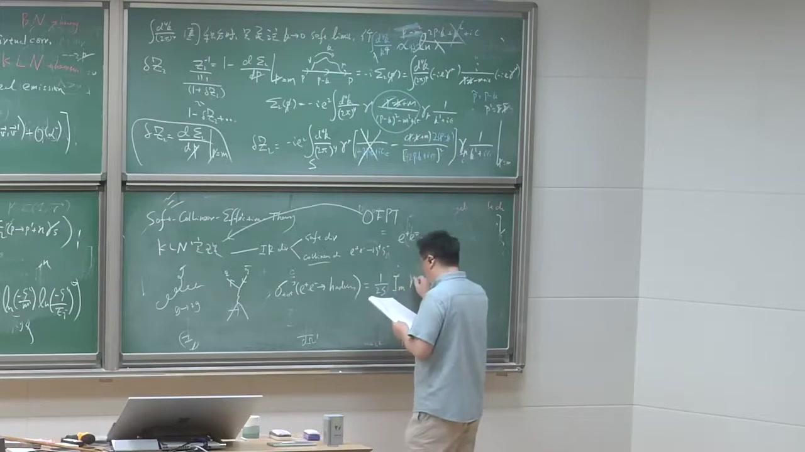

注解¶
以下是对视频片段（00:49:30 ~ 00:53:18）的深度注解：
1. 核心公式与符号解析¶
本段视频主要讲解了在计算场强重整化常数 \(\delta Z_2\) 时，如何处理费米子自能图积分分子中的狄拉克矩阵（Dirac Matrices）代数，并利用留数定理（Residue Theorem）完成对能量分量 \(k^0\) 的积分。
1.1 狄拉克矩阵的代数化简¶
在计算自能图时，分子中会出现形如 \(\gamma^\mu (\slashed{p} - \slashed{k} + m) \gamma_\mu\) 的结构。在软光子极限（\(k \to 0\)）下，主要处理的是 \(\gamma^\mu (\slashed{p} + m) \gamma_\mu\)。 视频中利用了狄拉克矩阵的反对易关系 \(\{\gamma^\mu, \gamma^\nu\} = 2g^{\mu\nu}\)，推导了以下重要恒等式： 1. \(\gamma^\mu \gamma_\mu = 4\) （在四维时空中） 2. \(\gamma^\mu \slashed{p} \gamma_\mu = -2\slashed{p}\)
利用这些恒等式，分子可以被化简。视频中提到，作用在在壳（on-shell）旋量上时，可以使用狄拉克方程 \(\slashed{p} u(p) = m u(p)\)（视频字幕中将 \(m\) 识别为“i'mma”或“Gamma”）。通过代数运算，分子最终化简为与 \(m^2\) 相关的项。
1.2 积分的留数定理处理¶
化简分子后，积分的形式变为：
在软光子近似下，费米子传播子分母变为 \(-2p \cdot k + i\epsilon\)。 为了计算这个四维积分，通常将其拆分为三维动量积分和一维能量积分：
对于 \(dk^0\) 的积分，视频中使用了留数定理（Residue Theorem）。 被积函数在复 \(k^0\) 平面上有多个极点（Poles）： 1. 光子传播子极点：来源于 \(\frac{1}{k^2 + i\epsilon} = \frac{1}{(k^0)^2 - |\mathbf{k}|^2 + i\epsilon}\)，极点位于 \(k^0 = \pm |\mathbf{k}| \mp i\epsilon\)。 2. 费米子传播子极点：来源于 \(\frac{1}{-2p \cdot k + i\epsilon} = \frac{1}{-2(p^0 k^0 - \mathbf{p} \cdot \mathbf{k}) + i\epsilon}\)，极点位于 \(k^0 = \frac{\mathbf{p} \cdot \mathbf{k}}{p^0} - i\epsilon'\)。
视频中指出，为了方便计算，通常选择闭合围道（Contour）包围下半平面或上半平面的极点。通过计算留数，可以完成 \(dk^0\) 的积分，从而将四维积分转化为三维空间动量积分。
2. 理论背景补充¶
- 狄拉克矩阵代数（Dirac Matrix Algebra）：在量子电动力学（QED）的微扰计算中，经常需要处理多个 \(\gamma\) 矩阵的乘积。利用反对易关系和迹定理（Trace Theorems）可以系统地化简这些表达式。这是费曼图计算的基本功。
- 留数定理（Residue Theorem）：复变函数中的一个重要定理，常用于计算实轴上的反常积分。在量子场论中，由于传播子分母中引入了 \(+i\epsilon\) 处方（Feynman prescription），极点会稍微偏离实轴。这使得我们可以通过在复能量平面上选择合适的半圆围道来计算 \(dk^0\) 积分。
3. 核心概念通俗解释¶
- “算代数”：在计算费曼图时，分子上通常会有一大串 \(\gamma\) 矩阵。这就好比解一个复杂的代数方程，我们需要利用已知的规则（比如 \(\gamma^\mu \gamma_\mu = 4\)）把这一长串符号“消消乐”，最后变成简单的数字或动量。
- “找泡（Pole）”与留数定理：在计算能量积分时，分母为零的点被称为“极点”（Pole，字幕中识别为“泡”）。这些极点代表了粒子的“在壳”状态（即满足能量动量关系）。留数定理告诉我们，只要找到这些极点，并计算它们附近的“留数”（可以理解为极点处的权重），就能轻松算出整个积分的值。这比直接硬算实数积分要巧妙得多。
4. 板书截图描述¶
- 图1 & 图2：老师正在黑板右侧书写 \(\delta Z_2\) 的积分表达式。可以看到分子部分包含了复杂的 \(\gamma\) 矩阵结构：\(\gamma^\mu (\slashed{p} - \slashed{k} + m) \gamma_\mu\)。这正是视频中讲解需要利用狄拉克代数进行化简的部分。
- 图3：老师进一步化简了积分表达式，将四维积分测度拆分为 \(d^3\mathbf{k}\) 和 \(dk^0\)。黑板上清晰地写出了化简后的分母结构 \((p \cdot k)^2\) 和光子传播子分母 \(k^2 + i\epsilon\)。这为接下来使用留数定理对 \(dk^0\) 进行积分做好了准备。